Pokazać kupującemu, że China Select to poważna firma z konkretną ofertą — zanim zacznie scrollować.
Liczby w projektach są przykładowe; złote pola [X] czekają na dane i decyzje. Sekcje bez zmian zostają 1:1 — nic nie jest usuwane. Liczby „N z 692 pytań” pochodzą z pola pytań zbudowanego z sytuacji kupujących i sprawdzonego śladem w dyskusjach i wyszukiwarce; klasa dowodu obawy wynika ze śladów, nie z liczby.
8 z 16sklepów w benchmarku na miejscu China Select lub niżej w rankingu hero
3 z 16serwisów ma sekcję opinii na stronie głównej
10 z 16sklepów ma pasek zaufania, ale konkretne liczby tylko 3 z 10
Klucz zmian＋ Noweelement lub funkcja, których dziś nie ma✎ Zmianaistniejący element zmienia wygląd, układ lub działanieAa Tekstzmienia się tylko napis lub treść⇄ Przeniesienieelement trafia w inne miejsce− Usunięcieelement znika ze strony[X]złote pole — dane lub decyzja do uzupełnienia
Numer w kółku na projekcie ma kolor kodu i odpowiada pozycji na liście „Znaczniki na projekcie”.
HP-01
Pierwszy ekran — hero i wyszukiwarka
ZAMIANA
Kupujący trafia bez wiedzy o China Select — potrzebuje w 3 sekundy odpowiedzi: co tu kupię, za ile i czy to wiarygodna firma. Dziś hero zadaje pytanie segmentacyjne, nie daje odpowiedzi.
Najlepsze na rynku
Auto China (auto-china.com): hero jako wideo w pętli i karuzela 4 modeli; przy każdym aucie trzy liczby (moc, zasięg lub przyspieszenie, miejsca), cena „od” i dwa przyciski. Na telefonie osobny, pionowy plik wideo.
Guazi: wyszukiwarka „Car Finder” stoi w pierwszym ekranie, po prawej stronie hero, razem z przyciskiem „Search” i przełącznikiem aut elektrycznych.
PrimaAuto: liczba ofert jest wpisana w przycisk wyszukiwarki („Szukaj wśród 4 489 ofert”), a w podtytule hero wymienione są elementy ceny: transport, cło, homologacja i rejestracja.
AutoHero: pod przyciskiem hero stoją dwie oceny zewnętrzne — Trustpilot z liczbą recenzji (1909) i Google.
Auto China (auto-china.com): pod hero wyszukiwarka „Find your car” z filtrami marka, nadwozie, napęd i polem modelu.
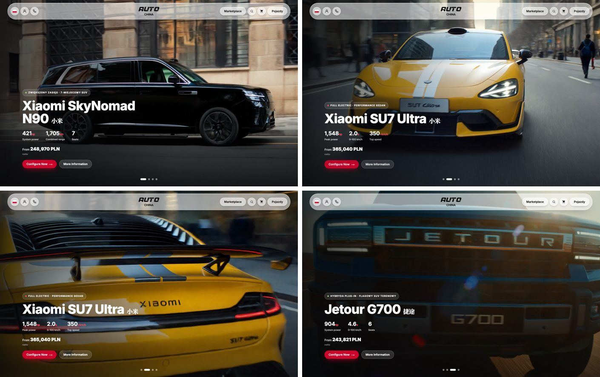
Auto China (auto-china.com)Hero jako wideo w pętli: cztery klatki z jednego wejścia na stronę. Zmieniają się auta (Xiaomi N90, SU7 Ultra, Jetour G700); przy każdym trzy liczby, cena „od” i przyciski „Configure Now” / „More Information”, kropki karuzeli na dole.
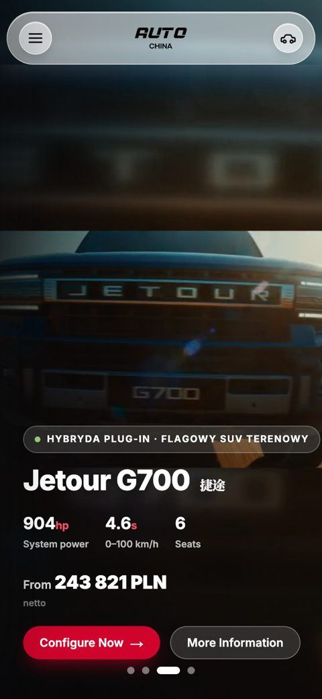
Auto China (auto-china.com) — telefonTen sam hero na telefonie: pionowe wideo (osobny plik 720p), nazwa modelu, trzy liczby, cena i dwa przyciski w pierwszym ekranie.
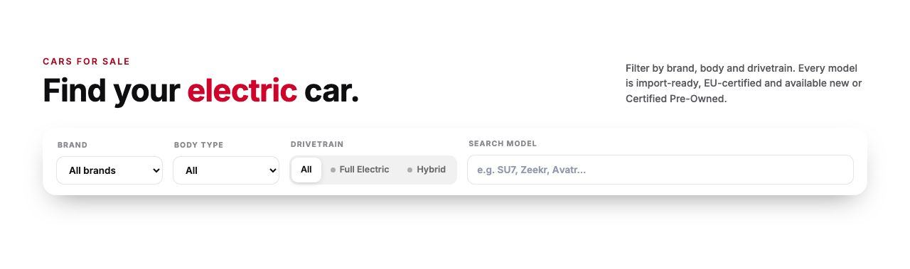
Auto China (auto-china.com)Wyszukiwarka „Find your electric car” pod hero: listy marka i nadwozie, przełącznik napędu (wszystkie / elektryczne / hybrydy) i pole „Search model”.
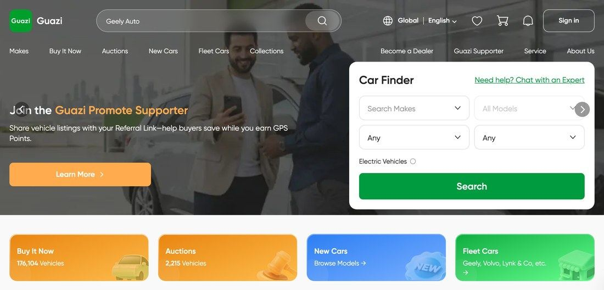
GuaziWyszukiwarka „Car Finder” w pierwszym ekranie, po prawej obok hasła hero: pola „Search Makes” i „All Models”, dwa pola „Any”, przełącznik „Electric Vehicles” i zielony przycisk „Search”. Pod hero cztery kafle z liczbą pojazdów, np. „Buy It Now: 176,104 Vehicles”. Samo hasło hero dotyczy programu partnerskiego, nie wyszukiwarki.
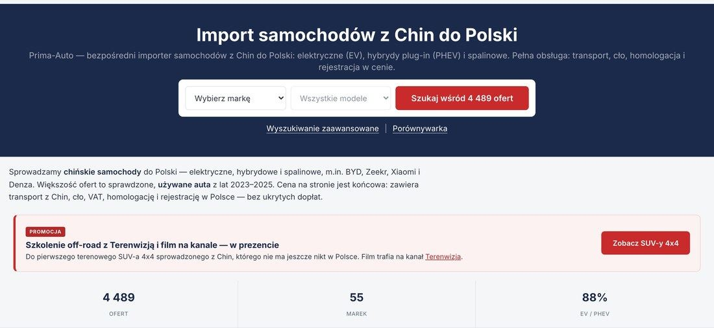
PrimaAutoWyszukiwarka w pierwszym ekranie: pole marki, pole modelu i przycisk „Szukaj wśród 4 489 ofert” — liczba ofert jest wpisana w przycisk. Pod nią pasek trzech liczb (oferty, marki, udział EV / PHEV) oraz zdanie, że cena zawiera transport, cło, VAT, homologację i rejestrację.
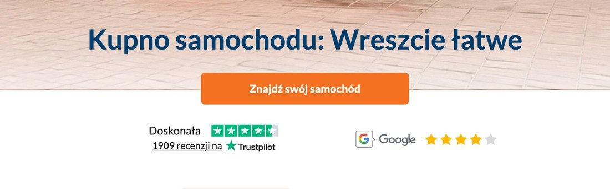
AutoHeroPod przyciskiem „Znajdź swój samochód” dwie oceny zewnętrzne: Trustpilot („Doskonała”, „1909 recenzji na Trustpilot”) i Google z gwiazdkami. Hero nie ma wyszukiwarki.
Dziś
Dziś: hasło segmentacyjne, wyszukiwarka poniżej foldu, zero liczb i zewnętrznych dowodów
Projekt
A/B
Wariant B: hasło o raporcie Guazi zamiast „ceny do odbioru”
A/B
Wariant B: Vinni (doradca AI) zamiast formularza wyszukiwarki
123
4▶ Tło: wideo w pętli (auto z oferty) · na telefonie wersja pionowa
Import aut z Chin · ceny do odbioru w Polsce
Auta z Chin z ceną do odbioru, raportem i gwarancją
Transport, cło, homologacja i rejestracja po naszej stronie. Każdy egzemplarz sprawdzony w Chinach, zanim zapłacisz resztę.
✎ ZmianaTło hero = krótkie wideo w pętli (auto z oferty w ruchu), bez dźwięku; osobna wersja pionowa na telefon i zdjęcie zastępcze, dopóki wideo się ładuje.
⇄ PrzeniesienieWyszukiwarka widoczna od razu w pierwszym ekranie — obok hasła hero, bez scrollowania.
＋ NoweZakładka „Rata miesięczna” w wyszukiwarce działa jak kalkulator odwrotny: kupujący ustawia, ile chce płacić miesięcznie (i okres), a lista pokazuje auta mieszczące się w tej racie. Liczone tym samym wzorem co kalkulator na karcie auta.
＋ NoweLiczba aut w ofercie widoczna w hero (i na przycisku wyszukiwarki).
＋ NowePasek zaufania z czterema konkretnymi argumentami bezpośrednio pod hero.
Znaczniki na projekcie
1HP-01.1Aa TekstHasło z propozycją wartości — co kupuję, jaką cenę rozumieć jako finalną
2HP-01.2＋ NoweWyszukiwarka na pierwszym ekranie — szukanie bez scrollowania — z zakładką „Rata miesięczna” (szukanie po racie)
3HP-01.3＋ NowePasek zaufania z czterema liczbami zamiast czterech ogólników
4HP-01.4✎ ZmianaTło hero = krótkie wideo w pętli z autem z oferty; na telefonie osobny pionowy plik, do czasu wczytania zdjęcie. Wideo kontra zdjęcie — test A/B nr 6.
DlaczegoKupujący nie zna China Select; liczba aut i wyszukiwarka w pierwszym ekranie mówią mu, co tu kupi i czy to poważna oferta.kliknij, aby rozwinąć
mocnaUX
Wzorce
Auto China (auto-china.com) — hero jako wideo, przy aucie liczby i cena „od” ✓ · Guazi — wyszukiwarka w pierwszym ekranie ✓ · PrimaAuto — liczba ofert wpisana w przycisk wyszukiwarki ✓ · AutoHero — ocena Trustpilot z liczbą recenzji pod przyciskiem ✓
Uzasadnienie
Hero zadaje dziś pytanie segmentacyjne („Dla rodzin”) zamiast dać odpowiedź; nie ma w nim liczby ani zewnętrznego dowodu, a wyszukiwarka jest niewidoczna bez przewijania. Wyszukiwarka obok hasła, liczba aut w ofercie i zakładka „Rata miesięczna” pozwalają kupującemu z konkretnym pytaniem (SUV do 150 tys., elektryk) zawęzić ofertę od razu. Ocena zewnętrzna pod przyciskiem to dowód, którego nie wystawiamy sami.
Podstawa oceny siły
Hero z wyszukiwarką i kalkulatorem jest na liście braków (trzeci priorytet); siła wynika z tego, że to pierwszy ekran każdej wizyty.
Element → Akcja → Zdarzenie
Element: Pierwszy ekran: wideo, wyszukiwarka z zakładką raty, liczba aut, pasek zaufania pod spodem Akcja: Kupujący wybiera markę albo ratę i od razu przechodzi do listy aut Zdarzenie: wyszukiwanie z pierwszego ekranu
mocnaPsychologia sprzedaży
Mechanizm
Konkretna liczba aut w ofercie jest szybkim sygnałem, że firma istnieje i ma towar — zastępuje deklarację. Rata w wyszukiwarce to kotwica (Anchoring) na skali miesięcznego budżetu: kupujący szuka „ile mogę płacić”, a nie „ile kosztuje auto”.
Liczba aut działa tylko jako prawdziwa i aktualna. Ocenę zewnętrzną pokazujemy dopiero, gdy mamy prawdziwe opinie na Google lub Trustpilot. Zakładka raty działa tylko z partnerem finansowym.
Obawa kupującego
„Ciągle widzę chińskie auta w testach i na ulicach — chcę sprawdzić, czy to coś warte” — blokuje go stereotyp taniej chińszczyzny (udowodnione ✅✅; 41 z 692 pytań w polu pytań, zbudowanym z fraz wyszukiwań i dyskusji, nie ankieta) · „Za te pieniądze chcę dostać więcej auta, niż kupię w Polsce” (udowodnione ✅✅; 27 z 692) · Technologiczny, Rodzina, Łowca okazji z ogłoszeń — wchodzą z ciekawości; Przedsiębiorca — przez ratę
Uzasadnienie
Kupujący trafia na stronę bez wiedzy o China Select i w pierwszych sekundach sprawdza dwie rzeczy: czy to prawdziwa firma i czy ma to, czego szuka. Bez liczby i zewnętrznego dowodu ta obawa zostaje nieusunięta, a kupujący z konkretnym pytaniem musi przewijać, zanim w ogóle zawęzi ofertę.
Testy A/B — 6 propozycji · 1 z grafiką kliknij, aby rozwinąćTest 1 · A/BHasło: „Auta z Chin sprawdzone przez Guaziz grafiką
Hipoteza: Jeśli w haśle pierwszego ekranu zamiast „ceny do odbioru” pokażemy raport inspekcji Guazi, to więcej osób przejdzie na listę aut, bo kupujący auta z Chin obawia się przede wszystkim, czy auto będzie takie, jak na zdjęciach, a nazwa znanego wystawcy raportu odpowiada na to od razu, kiedy cena do odbioru nie jest jeszcze ustalona.
Wariant AHasło projektu: „Auta z Chin z ceną do odbioru, raportem i gwarancją”.
Wariant BHasło: „Auta z Chin sprawdzone przez Guazi. Raport przy każdym aucie”. Zmienia się wyłącznie ta jedna linia; reszta pierwszego ekranu bez zmian.
Dlaczego pierwszy: Jedna linia tekstu, zero kosztu wdrożenia, a hasło widzi każdy odwiedzający; zmienia też to, na co odpowiada pierwsze zdanie — cena czy dowód stanu auta.
Dowód: Logika kupującego (CS): główna obawa przy imporcie na odległość to stan auta. W źródle: Baymard #1707 — użytkownicy oceniają wiarygodność marki i propozycję wartości już na stronie głównej.
Metryka główna: Przejście na listę aut — zdarzenie „klik Pokaż auta” lub „klik szybkiego wyboru”, do ustawienia w analityce
Pomocnicze:
Użycie wyszukiwarki (pierwszy wybór filtra)
Prośba o raport Guazi
Przewinięcie do paska „W liczbach”
Warunek: Min. 200 sesji na wariant, ruch bezpośredni i organiczny, bez kampanii płatnych. Wariant B zmienia tylko to jedno hasło, ale nadal widać obok niego „Cena do odbioru” (linia nad hasłem, zakładka, suwak), więc pytanie o cenę do odbioru (co w niej jest) trzeba rozstrzygnąć przed obiema wersjami.
Zastępczo: przed/po 14 dni + nagrania sesji: 20 sesji z kliknięciem w „Pokaż auta”, ręczne policzenie, na którym haśle kupujący zatrzymuje wzrok
Odwracalny
Wariant B — jak wygląda
Import aut z Chin · ceny do odbioru w Polsce
Auta z Chin sprawdzone przez Guazi. Raport przy każdym aucie
Transport, cło, homologacja i rejestracja po naszej stronie. Każdy egzemplarz sprawdzony w Chinach, zanim zapłacisz resztę.
Test 2 · A/BPrzycisk „Pokaż [liczba] aut” z liczbą z feedu.
Hipoteza: Jeśli na przycisku wyszukiwarki pokażemy liczbę aut („Pokaż [liczba] aut” zamiast „Pokaż auta”), to więcej osób kliknie przycisk, bo kupujący, który nie zna China Select, w momencie decyzji o kliknięciu chce wiedzieć, czy jest z czego wybierać, i nie odpowiada na to nic innego na pierwszym ekranie.
Wariant APrzycisk „Pokaż auta”.
Wariant BPrzycisk „Pokaż [liczba] aut” z liczbą z feedu.
Dowód: Wzorzec rynku: Cinch — przycisk wyszukiwarki z liczbą aut („Search 10 233 cars”); Vehis — „Pokaż samochody: 12464”.
Metryka główna: Przejście na listę aut — zdarzenie „klik Pokaż auta”, do ustawienia w analityce
Pomocnicze:
Użycie wyszukiwarki (pierwszy wybór filtra)
Klik w kontakt
Warunek: Min. 300 sesji na wariant; liczba aut musi pochodzić z feedu na żywo (dziś [liczba]); test nie startuje ze stałą liczbą.
Zastępczo: przed/po 14 dni + porównanie liczby kliknięć przycisku na 100 odsłon pierwszego ekranu
Odwracalny
Test 3 · A/BPanel „Czego szukasz?” z czterema szybkimi wyborami i przyciskiem „Pokaż wszystkie auta”; pola rozwijane pod l…
Hipoteza: Jeśli zamiast czterech list rozwijanych pokażemy cztery szybkie wybory z liczbą aut („SUV 7-os.”, „Elektryczne”, „Do 150 tys. zł”, „Dostępne od ręki”) i link „Więcej filtrów”, to więcej osób przejdzie na listę aut, bo kupujący nie zna chińskich marek i modeli, więc nie ma czego wybierać z list marka–model.
Wariant AWyszukiwarka z polami Marka, Model, Nadwozie, Napęd, suwakiem budżetu i przełącznikiem „Tylko dostępne od ręki”.
Wariant BPanel „Czego szukasz?” z czterema szybkimi wyborami i przyciskiem „Pokaż wszystkie auta”; pola rozwijane pod linkiem „Więcej filtrów”.
Dowód: W źródle: Baymard #1704 — w małych katalogach wyszukiwarka jest drogą zapasową, a nawigacja i lista ważniejsze. Logika kupującego (CS): marki Avatr, Deepal, Voyah są dla polskiego kupującego nieznane.
Metryka główna: Przejście na listę aut — zdarzenie „klik szybkiego wyboru lub Pokaż auta”
Pomocnicze:
Użycie wyszukiwarki (pierwszy wybór filtra)
Powrót z listy aut na stronę główną w tej samej sesji
Warunek: Min. 300 sesji na wariant; liczby przy wyborach z feedu. Wymaga zgody China Select na przeniesienie pól do „Więcej filtrów”.
Zastępczo: przed/po 14 dni + nagrania sesji: 20 sesji z interakcją z wyszukiwarką, policzyć, ile osób wybiera markę, a ile wybór po potrzebie
Odwracalny
Test 4 · A/BOkno doradcy Vinni z jednym polem tekstowym i trzema przykładowymi pytaniami; link „Wolę filtry” pokazuje doty…
Hipoteza: Jeśli w miejscu formularza pokażemy doradcę AI Vinni z jednym polem „Opisz, jakiego auta szukasz”, to więcej osób przejdzie na kartę auta, bo kupujący bez sprecyzowanej potrzeby nie wie, od której marki czy filtra zacząć, a opis własnymi słowami nie wymaga wiedzy o chińskich markach.
Wariant AFormularz wyszukiwarki w prawej kolumnie pierwszego ekranu.
Wariant BOkno doradcy Vinni z jednym polem tekstowym i trzema przykładowymi pytaniami; link „Wolę filtry” pokazuje dotychczasowy formularz.
Dowód: Logika kupującego (CS): kupujący auta z Chin zaczyna od pytania, nie od filtra. Hipoteza własna, brak wyniku w źródle.
Metryka główna: Przejście na kartę auta — zdarzenie „wejście na kartę auta” po rozmowie z doradcą lub po wyszukiwarce (łącznie)
Pomocnicze:
Liczba rozpoczętych rozmów z doradcą
Klik w kontakt z doradcą po rozmowie
Klik „Wolę filtry”
Warunek: Min. 300 sesji na wariant; wymaga działającego doradcy Vinni i zgody China Select. Test nowego kanału, a nie wyszukiwarki.
Zastępczo: przed/po 14 dni + przegląd 20 rozmów z doradcą Vinni: policzyć, w ilu z nich kupujący dostał trafną kartę auta i kliknął w nią
Odwracalny
Test 5 · A/BWyszukiwarka bez zakładek, wyłącznie „Cena do odbioru”; suwak budżetu bez zmian.
Hipoteza: Jeśli usuniemy z wyszukiwarki zakładkę „Rata miesięczna” i zostawimy tylko „Cenę do odbioru”, to więcej osób użyje wyszukiwarki, bo formularz będzie prostszy, a kupujący nie trafi na opcję, której China Select może jeszcze nie obsługiwać.
Wariant AWyszukiwarka z dwiema zakładkami: „Cena do odbioru” i „Rata miesięczna”.
Wariant BWyszukiwarka bez zakładek, wyłącznie „Cena do odbioru”; suwak budżetu bez zmian.
Dowód: W źródle: Baymard #668 — użytkowników zniechęca duża liczba pól widocznych domyślnie (dotyczy formularzy w kasie). Wzorzec rynku: Vehis — rata na kaflu obok ceny brutto.
Metryka główna: Użycie wyszukiwarki — zdarzenie „pierwszy wybór filtra”, do ustawienia w analityce
Pomocnicze:
Przejście na listę aut
Klik w zakładkę „Rata miesięczna” (tylko wariant A)
Warunek: Min. 300 sesji na wariant. Wariant A wymaga decyzji o finansowaniu i działającego filtra raty; bez niej zakładka zostaje poza projektem i test się nie odbywa.
Zastępczo: przed/po 14 dni + nagrania sesji: 20 sesji z kliknięciem w zakładkę „Rata miesięczna”
Odwracalny
Test 6 · A/BTo samo hasło, wyszukiwarka i pasek, ale tło = jedno zdjęcie auta (bez wideo).
Hipoteza: Jeśli tło pierwszego ekranu będzie krótkim wideo z autem z oferty zamiast zdjęcia, to więcej osób przejdzie na listę aut, bo ruch pokazuje auto jako realny egzemplarz i zatrzymuje wzrok na haśle i wyszukiwarce. Ryzyko odwrotne: wideo wydłuża ładowanie na telefonie i część osób wyjdzie, zanim zobaczy wyszukiwarkę.
Wariant AProjekt: wideo w pętli bez dźwięku, osobna wersja pionowa na telefon, zdjęcie zastępcze do czasu wczytania.
Wariant BTo samo hasło, wyszukiwarka i pasek, ale tło = jedno zdjęcie auta (bez wideo).
Dowód: Wzorzec rynkowy: Auto China (auto-china.com) — hero jako wideo w pętli z osobnym plikiem pionowym na telefon. Pomysł zespołu (Tomek 12.10). Wynik nieprzewidywalny bez testu.
Metryka główna: Przejście na listę aut — klik „Pokaż auta” lub szybkiego wyboru, do ustawienia w analityce
Pomocnicze:
Odsetek wyjść bez interakcji na telefonie
Czas do pierwszej interakcji z wyszukiwarką
Czas wczytania pierwszego ekranu (LCP) na telefonie
Warunek: Min. 200 sesji na wariant, osobno telefon i komputer. Wideo skompresowane (pętla kilka sekund), start po wczytaniu zdjęcia zastępczego, tak żeby nie blokowało wyszukiwarki.
Zastępczo: przed/po 14 dni + pomiar czasu wczytania pierwszego ekranu na telefonie przed i po
Decyzja Zewnętrzny badge (Google/Trustpilot) wymaga zebrania opinii zewnętrznych. Filtr raty miesięcznej — po decyzji o uruchomieniu finansowania.
HP-02
Pasek zaufania — zostaje, dochodzi pasek z liczbami
UZUPEŁNIENIE FUNKCJI
Dzisiejszy pasek obietnic zostaje bez zmian. Pod nim dochodzi drugi, praktyczny pasek z liczbami: punkty kontroli w raporcie Guazi, liczba aut w ofercie, czas do odbioru, liczba sprowadzonych aut.
Najlepsze na rynku
AutoChina: czas dostawy podany liczbą w tygodniach („12-16 tyg.”) obok liczby aut i deklaracji pełnej obsługi.
PrimaAuto: pasek liczb pokazuje skalę oferty (liczba ofert i marek) oraz udział aut elektrycznych i hybryd plug-in.
Auto China (auto-china.com): trzy obietnice (rejestracja, 2 lata gwarancji, dostawa ze śledzeniem) — każda z linkiem „→” do podstrony ze szczegółami.
AutoChinaPod wyszukiwarką w hero trzy liczby: „3429 Dostępnych pojazdów”, „100% Pełna obsługa importu”, „12-16 tyg. Czas dostawy”.
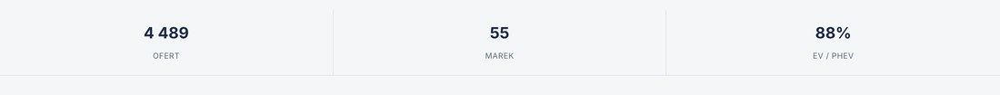
PrimaAutoPasek trzech liczb pod wyszukiwarką: „4 489 ofert”, „55 marek”, „88% EV / PHEV”.
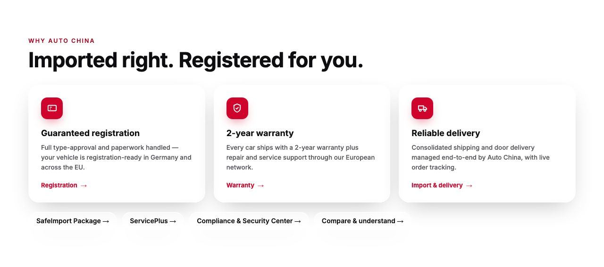
Auto China (auto-china.com)„Imported right. Registered for you.” — trzy karty obietnic z ikoną i krótkim opisem; pod każdą link do podstrony (Registration →, Warranty →, Import & delivery →), niżej cztery linki do pakietów i centrum zgodności.
Dziś
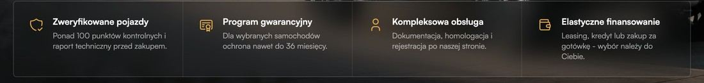
Dziś: pasek obietnic — cztery filary pod pierwszym ekranem (zostaje)
Projekt
Zweryfikowane pojazdyPonad 100 punktów kontrolnych i raport techniczny przed zakupem.
Program gwarancyjnyDla wybranych samochodów ochrona nawet do [36] miesięcy.
Kompleksowa obsługaDokumentacja, homologacja i rejestracja po naszej stronie.
Elastyczne finansowanieLeasing, kredyt lub zakup za gotówkę - wybór należy do Ciebie.
1W liczbach
[100+ / 200+]punktów kontroli w raporcie Guazi (do potwierdzenia z Guazi)
[liczba]aut w ofercie dziś
[X] tyg.od rezerwacji do odbioru
[liczba]aut sprowadzonych do Polski
Zmiany
= Bez zmianPasek obietnic (4 filary) zostaje 1:1.
＋ NoweNowy pasek „w liczbach” pod nim: [100+ / 200+] punktów kontroli w raporcie Guazi (do potwierdzenia z Guazi) · [liczba] aut w ofercie · [X] tyg. od rezerwacji do odbioru · [liczba] aut sprowadzonych.
Znaczniki na projekcie
1HP-02.1＋ NoweNowy pasek z liczbami
DlaczegoOgólne obietnice nie zdejmują niepewności; drugi pasek z liczbami (punkty kontroli, liczba aut, czas do odbioru) zamienia je w fakty.kliknij, aby rozwinąć
średniaUX
Uzasadnienie
Pasek obietnic zostaje bez zmian. Pod nim dochodzi pasek z liczbami, które odpowiadają na trzy pytania importera: ile aut, ile to trwa, kto sprawdza auto. Każda pozycja to liczba albo warunek do sprawdzenia, a nie słowo w rodzaju „bezpiecznie”.
Podstawa oceny siły
Pasek zaufania ma 10 z 16 przebadanych stron głównych, konkretne liczby w nim — 3 z tych 10. Pasek sygnałów zaufania jest na liście braków (drugi priorytet, pewne).
Element → Akcja → Zdarzenie
Element: Drugi pasek „w liczbach” pod paskiem obietnic Akcja: Kupujący przegląda liczby bez klikania Zdarzenie: wyświetlenie paska z liczbami
średniaPsychologia sprzedaży
Mechanizm
Konkretna liczba działa jako sygnał wiarygodności: liczba specyficzna („100+ punktów kontroli”, „[X] tygodni do odbioru”) brzmi jak fakt, okrągły ogólnik — jak marketing. Efekt pierwszeństwa (Primacy Effect): pasek wysoko na stronie staje się filtrem, przez który kupujący czyta resztę.
Źródło i klasa dowodu
Dowód społeczny — klasa dowodu: przypadek (⚠️)
Granica
Liczby muszą być prawdziwe i potwierdzone przez China Select (czas dostawy, liczba aut). Potrzebna jedna liczba punktów kontroli w całej komunikacji — strategia reklamowa mówi o 300, strona o 100+.
Obawa kupującego
„Ciągle widzę chińskie auta w testach i na ulicach — chcę sprawdzić, czy to coś warte” — stereotyp taniej chińszczyzny (udowodnione ✅✅; 41 z 692 pytań w polu pytań, zbudowanym z fraz wyszukiwań i dyskusji, nie ankieta) · Technologiczny i Rodzina — dla nich liczby odpowiadają na pytanie „kim wy właściwie jesteście”
Uzasadnienie
Kupujący widzi markę, o której nie słyszał. Liczby nie zastąpią raportu inspekcji, ale zdejmują pierwszą warstwę nieufności, zanim kupujący przejdzie do konkretnego auta.
Testy A/B — 5 propozycji · 1 z grafiką kliknij, aby rozwinąćTest 1 · A/BPasek obietnic bez zmian, pod nim pasek „W cenie do odbioru”: transport, cło, homologacja, rejestracja — każda…z grafiką
Hipoteza: Jeśli zamiast paska „W liczbach” pokażemy pasek „W cenie do odbioru” (transport, cło, homologacja, rejestracja), to więcej osób przejdzie na listę lub kartę auta, bo kupujący importu obawia się ukrytych kosztów i dziś żadne miejsce na stronie głównej nie mówi, co zawiera cena.
Wariant APasek obietnic bez zmian, pod nim pasek „W liczbach”: 100+ punktów kontroli, [liczba] aut w ofercie, [X] tyg. do odbioru, [liczba] aut sprowadzonych.
Wariant BPasek obietnic bez zmian, pod nim pasek „W cenie do odbioru”: transport, cło, homologacja, rejestracja — każda pozycja z haczykiem.
Dlaczego pierwszy: Ukryte koszty to najczęstsza obawa przy imporcie, a dziś strona w ogóle jej nie adresuje; zmiana to cztery krótkie pozycje bez nowych liczb.
Dowód: W źródle: Baymard #825 — użytkownicy muszą znać pełny koszt przed decyzją. Wzorzec rynku: PrimaAuto — zakres kosztów wliczonych w cenę jako lista. Karta czytania China Select: koszt całkowity i cło — brak na stronie.
Metryka główna: Przejście na listę lub kartę auta — zdarzenie „wejście na listę aut”
Pomocnicze:
Przewinięcie do marek i modeli
Klik w kontakt
Prośba o raport Guazi
Warunek: Min. 200 sesji na wariant. musimy potwierdzić, co faktycznie wlicza się w cenę do odbioru (pytanie otwarte).
Zastępczo: przed/po 14 dni + nagrania sesji: 20 sesji z paskiem w widoku, policzyć, ile kończy się wejściem na listę aut
Odwracalny
Wariant B — jak wygląda
Zweryfikowane pojazdyPonad 100 punktów kontrolnych i raport techniczny przed zakupem.
Program gwarancyjnyDla wybranych samochodów ochrona nawet do [36] miesięcy.
Kompleksowa obsługaDokumentacja, homologacja i rejestracja po naszej stronie.
Elastyczne finansowanieLeasing, kredyt lub zakup za gotówkę - wybór należy do Ciebie.
W cenie do odbioru
Transportz Chin do Polski
Cłopo naszej stronie
Homologacjapo naszej stronie
Rejestracjapo naszej stronie
Test 2 · A/BPierwszy filar: „Raport inspekcji Guazi — 100+ punktów kontroli przy każdym aucie”.
Hipoteza: Jeśli w pasku obietnic pierwszy filar zamienimy z „Zweryfikowane pojazdy” na „Raport inspekcji Guazi — 100+ punktów kontroli”, to więcej osób poprosi o raport lub przejdzie na kartę auta, bo ogólnik „zweryfikowane” może napisać każdy, a nazwa znanego wystawcy jest sprawdzalna.
Wariant APierwszy filar: „Zweryfikowane pojazdy — ponad 100 punktów kontrolnych i raport techniczny przed zakupem”.
Wariant BPierwszy filar: „Raport inspekcji Guazi — 100+ punktów kontroli przy każdym aucie”.
Dowód: Wzorzec rynku: Guazi — jedyny z 16 zbadanych sklepów z pełnym raportem stanu; strona China Select nie łączy nazwy z filarem. Logika kupującego (CS).
Metryka główna: Prośba o raport Guazi — zdarzenie „klik Zamów przykładowy raport” w dowolnym miejscu strony głównej
Pomocnicze:
Przejście na kartę auta
Przewinięcie do sekcji partnera
Warunek: Min. 200 sesji na wariant; wymaga zgody China Select na użycie nazwy Guazi przy tym filarze.
Zastępczo: przed/po 14 dni + nagrania sesji: 20 sesji z kliknięciem w „Zamów przykładowy raport”
Odwracalny
Test 3 · A/BPięć filarów: dochodzi „Serwis i części w Polsce” z jednym zdaniem o partnerach serwisowych.
Hipoteza: Jeśli dodamy piąty filar „Serwis i części w Polsce”, to więcej osób przejdzie na listę aut, bo kupujący auta z Chin obawia się, co się stanie po zakupie, gdy auto się zepsuje, a strona dziś milczy.
Wariant ACztery filary obietnic.
Wariant BPięć filarów: dochodzi „Serwis i części w Polsce” z jednym zdaniem o partnerach serwisowych.
Dowód: Wzorzec rynku: 4 z 16 zbadanych sklepów odpowiada na obawę o serwis na stronie głównej. Karta czytania China Select: serwis po zakupie — brak.
Metryka główna: Przejście na listę aut — zdarzenie „wejście na listę aut”
Pomocnicze:
Klik w kontakt
Przewinięcie do marek
Warunek: Warunek twardy: China Select potwierdza partnerów serwisowych w Polsce; bez tego test się nie odbywa.
Zastępczo: przed/po 14 dni + pytania kupujących do doradcy o serwis: policzyć przed i po
Odwracalny
Test 4 · A/BJeden pasek: wyłącznie „W liczbach”.
Hipoteza: Jeśli usuniemy pasek obietnic i zostawimy tylko pasek „W liczbach”, to przejście na listę aut nie spadnie, bo konkretne liczby mówią to samo co ogólniki, a kupujący szybciej dociera do aut; spadek oznaczałby, że obietnice pracują.
Wariant ADwa paski: obietnice i „W liczbach”.
Wariant BJeden pasek: wyłącznie „W liczbach”.
Dowód: Wzorzec rynku: 10 z 16 sklepów ma pasek zaufania, ale konkretne liczby tylko 3 z 10.
Metryka główna: Przejście na listę lub kartę auta — zdarzenie „wejście na listę aut”
Pomocnicze:
Przewinięcie do marek i modeli
Klik w kontakt
Warunek: Min. 300 sesji na wariant; pasek obietnic jest dziś na stronie, więc wymaga zgody China Select.
Zastępczo: przed/po 14 dni + nagrania sesji: 20 sesji, policzyć, ile razy kupujący zatrzymuje się na pasku obietnic, a ile przechodzi od razu do marek
Odwracalny
Test 5 · A/BPasek „W liczbach” z podpisem „Stan na [data]”.
Hipoteza: Jeśli pod paskiem „W liczbach” dodamy podpis „Stan na [data], dane z oferty Guazi”, to więcej osób przejdzie na listę aut, bo kupujący zna liczby z folderów reklamowych i podpis pokazuje, że te są bieżące.
Wariant APasek „W liczbach” bez daty.
Wariant BPasek „W liczbach” z podpisem „Stan na [data]”.
Dowód: Logika kupującego (CS). Hipoteza własna, brak wyniku w źródle.
Metryka główna: Przejście na listę aut — zdarzenie „wejście na listę aut”
Pomocnicze:
Przewinięcie do marek
Warunek: Min. 200 sesji na wariant; data musi aktualizować się z feedu, inaczej wariant B szkodzi.
Zastępczo: przed/po 14 dni + nagrania sesji: 20 sesji z paskiem w widoku, policzyć wejścia na listę aut
Odwracalny
Decyzja Czas dostawy ([X] tyg.) i liczba dostępnych aut wymagają potwierdzenia. Serwis po zakupie (piąty pillar) — tylko jeśli mamy partnerów serwisowych.
HP-02a
Partner Guazi i raporty — nowa sekcja
DODAJEMY
Nowa sekcja o partnerstwie z Guazi: kim jest partner (skala i inwestorzy) i że każde auto ma raport inspekcji Guazi — streszczenie przy aucie, pełny raport na prośbę.
Najlepsze na rynku
Guazi: skala firmy pokazana liczbami (200K+ aut rocznie, 300K+ transakcji, 10K+ pracowników) i logotypami inwestorów.
Guazi: raport inspekcji ma ocenę, trzy deklaracje stanu i siedem obszarów z liczbami punktów; pełny raport jest pod przyciskiem „View Full Report”.
Guazi (karta czytania HP): w rotującym banerze hasło „11 Years, 3,000,000 Sales”.
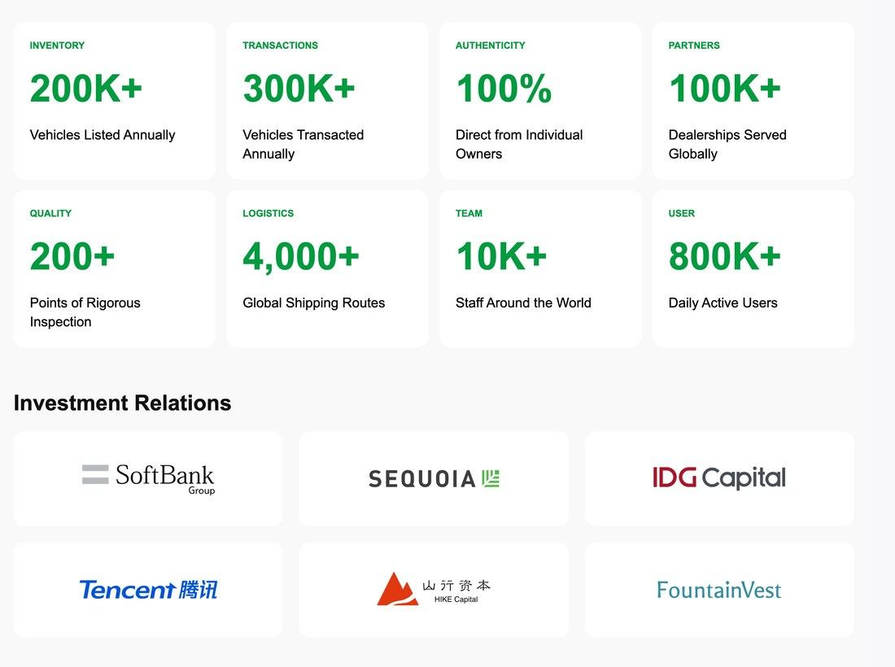
GuaziSiatka ośmiu liczb Guazi (m.in. 200K+ aut rocznie, 300K+ transakcji, 200+ punktów inspekcji, 10K+ pracowników) i sekcja „Investment Relations” z logotypami SoftBank, Sequoia, IDG Capital, Tencent, HIKE Capital i FountainVest.
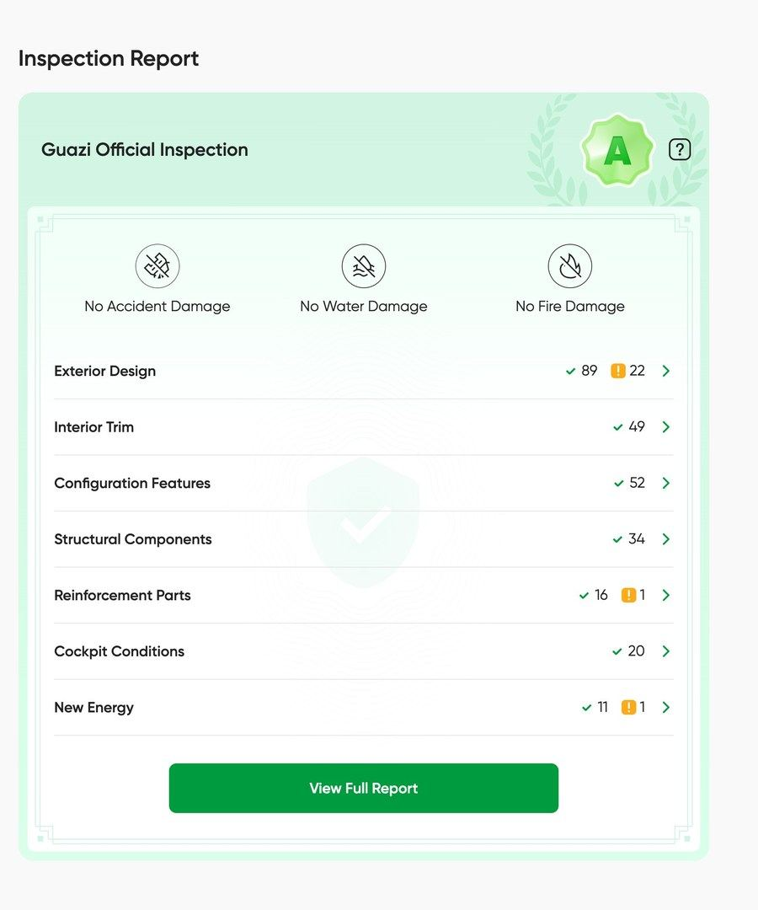
GuaziStreszczenie raportu inspekcji przy aucie: ocena „A”, trzy deklaracje (bez wypadku, bez zalania, bez pożaru), siedem obszarów z liczbą sprawdzonych punktów i przycisk „View Full Report”.
Dziś
Dziś tego nie ma
Element nowy — nie istnieje na obecnej stronie
Projekt
1 Nasz partner
China Select by Guazi — auta z jednej z największych platform aut używanych w Chinach
Wybieramy auta z oferty Guazi i sprowadzamy je do Polski. [Każde] przechodzi wcześniej inspekcję Guazi — wiesz, w jakim jest stanie, zanim zapłacisz resztę.
Guazipartner China Select
11 latna rynku aut używanych w Chinach
3 000 000sprzedanych aut
10 000+pracowników
SoftBank · Sequoia · Tencentwśród inwestorów
2 Żelazna weryfikacja: raport Guazi przy każdym aucie
Ocena stanu, [100+ / 200+] punktów kontroli (do potwierdzenia z Guazi), zdjęcia. Streszczenie widzisz przy aucie, pełny raport wysyłamy na e-mail lub WhatsApp.
✓ Bez wypadku✓ Bez zalania✓ Bez pożaru
3 Zamów przykładowy raport
Dane o Guazi: guazi.com (stan na 10.2026). Liczba punktów kontroli — do potwierdzenia z Guazi.
Zmiany
＋ NoweSekcja „Nasz partner”: China Select by Guazi + liczby Guazi (11 lat, 3 mln sprzedanych aut, 10 000+ pracowników, inwestorzy).
＋ Nowe„Żelazna weryfikacja”: raport Guazi przy każdym aucie — ocena stanu, [100+ / 200+] punktów kontroli (do potwierdzenia z Guazi), zdjęcia i trzy deklaracje stanu.
＋ NowePrzycisk „Zamów przykładowy raport” → kontakt (e-mail / WhatsApp).
Znaczniki na projekcie
1HP-02a.1＋ NowePartner Guazi i jego skala
2HP-02a.2＋ NoweRaport Guazi przy każdym aucie
3HP-02a.3＋ NoweProśba o pełny raport = kontakt
DlaczegoKupujący nie zna China Select, ale może sprawdzić Guazi; nazwany partner i raport przy każdym aucie przenoszą jego wiarygodność na nas.kliknij, aby rozwinąć
mocnaUX
Wzorce
Guazi — skala w liczbach i logotypy inwestorów ✓ · Guazi — streszczenie raportu inspekcji z przyciskiem „View Full Report” ✓
Reguły
Odznaka zaufania pochodzi od rozpoznawalnej instytucji i podaje jej nazwę — dziś „100+ punktów kontroli” bez nazwy Guazi WADA
Uzasadnienie
Nazwa partnera stoi dziś tylko przy logo („by Guazi”), a „100+ punktów kontroli” w pasku i w procesie nie jest powiązane z Guazi ani pokazane na przykładzie. Sekcja „Nasz partner” z liczbami Guazi i przykładem streszczenia raportu tłumaczy, skąd biorą się raporty na kartach aut. Przycisk „Zamów przykładowy raport” zbiera zapytania od osób, które boją się zakupu na odległość.
Podstawa oceny siły
Raport inspekcji to brak o pierwszym priorytecie na liście braków (pewne). Pełny raport stanu z oceną, trzema deklaracjami i siedmioma obszarami pokazuje Guazi; wśród przebadanych polskich importerów nie widzieliśmy podobnego.
Element → Akcja → Zdarzenie
Element: Sekcja „Nasz partner”: liczby Guazi, trzy deklaracje stanu, przycisk po raport Akcja: Kupujący prosi o przykładowy raport Guazi Zdarzenie: prośba o raport Guazi
mocnaPsychologia sprzedaży
Mechanizm
Przeniesienie wiarygodności (autorytet, Authority Bias): nieznany importer pożycza zaufanie od znanego partnera — skala Guazi i nazwy inwestorów działają jak poręczenie. Sygnał kosztowny (Signaling): niezależna inspekcja z oceną i liczbami jest trudna do podrobienia, w przeciwieństwie do zdania „100+ punktów kontroli”, które może napisać każdy. Lekceważenie prawdopodobieństwa (Neglect of Probability): raport zastępuje wyobrażony obraz „auto po wypadku” danymi.
Źródło i klasa dowodu
Lekceważenie prawdopodobieństwa — klasa dowodu: badanie (✅) · Sygnał kosztowny — rejestr badań: dowód silny, cytat niezweryfikowany (⚠️) · Autorytet — klasa w naszych źródłach nieopisana
Granica
Guazi nie jest marką konsumencką w Polsce — sama nazwa niewiele powie Rodzinie bez jednego zdania, kim Guazi jest. Wymaga zgody na użycie nazwy i logo oraz jednej, potwierdzonej liczby punktów kontroli (100+ czy 200+).
Obawa kupującego
„Mam wpłacić zaliczkę za auto, które stoi w Chinach, a nie mogę go obejrzeć” — czy auto będzie takie jak na zdjęciach (prawdopodobne ✅; 20 z 692 pytań w polu pytań, zbudowanym z fraz wyszukiwań i dyskusji, nie ankieta) · stereotyp taniej chińszczyzny (udowodnione ✅✅; 41 z 692) · obawa zakupu na odległość dotyczy siedmiu z ośmiu grup
Uzasadnienie
Kupujący auta importowanego na odległość ma jedną z głównych obaw: czy auto będzie takie, jak na zdjęciach. Raport Guazi odpowiada na nią lepiej niż jakikolwiek tekst o inspekcji — pod warunkiem, że kupujący wie o nim już na stronie głównej. To nasz główny argument zaufania, a dziś jest niewidoczny.
Testy A/B — 5 propozycji · 1 z grafiką kliknij, aby rozwinąćTest 1 · A/BPrawa kolumna: karta „Przykład streszczenia raportu Guazi” — ocena stanu, trzy deklaracje (bez wypadku, bez za…z grafiką
Hipoteza: Jeśli w sekcji partnera zamiast czterech kafli o skali Guazi pokażemy przykład streszczenia raportu (ocena, trzy deklaracje, kategorie punktowe), to więcej osób poprosi o raport, bo kupujący na odległość obawia się, że auto nie będzie takie jak na zdjęciach, a skala firmy tego nie rozwiewa, natomiast zobaczony wzór dokumentu tak.
Wariant APrawa kolumna: cztery kafle o Guazi (11 lat, 3 000 000 sprzedanych aut, 10 000+ pracowników, inwestorzy).
Wariant BPrawa kolumna: karta „Przykład streszczenia raportu Guazi” — ocena stanu, trzy deklaracje (bez wypadku, bez zalania, bez pożaru), trzy kategorie punktowe. Reszta sekcji bez zmian.
Dlaczego pierwszy: Raport jest głównym wyróżnikiem China Select, a dziś kupujący nigdy go nie widzi; wystarczy jedna zanonimizowana grafika, bez zmian w systemie.
Dowód: Wzorzec rynku: Guazi — jedyny z 16 zbadanych sklepów z pełnym raportem: ocena literowa, trzy deklaracje binarne, siedem kategorii punktowych. Dziś ta przewaga nie jest widoczna na stronie China Select.
Metryka główna: Prośba o raport Guazi — zdarzenie „klik Zamów przykładowy raport” w tej sekcji
Pomocnicze:
Przewinięcie do sekcji bezpieczeństwa
Przejście na listę aut po wizycie w sekcji
Czas w sekcji
Warunek: Min. 200 sesji na wariant; wymaga zanonimizowanego przykładu raportu oraz zgody China Select; karta auta (raport dwupoziomowy) powinna być gotowa wcześniej lub równocześnie.
Zastępczo: przed/po 14 dni + nagrania sesji: 20 sesji z kliknięciem w „Zamów przykładowy raport”
Odwracalny
Wariant B — jak wygląda
Nasz partner
China Select by Guazi — auta z jednej z największych platform aut używanych w Chinach
Wybieramy auta z oferty Guazi i sprowadzamy je do Polski. [Każde] przechodzi wcześniej inspekcję Guazi — wiesz, w jakim jest stanie, zanim zapłacisz resztę.
Guazipartner China Select
Przykład streszczenia raportu Guazi
Ocena stanu
[litera]
✓ Bez wypadku✓ Bez zalania✓ Bez pożaru
[kategoria 1]
[X] / [X]
[kategoria 2]
[X] / [X]
[kategoria 3]
[X] / [X]
Zanonimizowany fragment. Pełny raport (7 kategorii, zdjęcia) po kontakcie.
Żelazna weryfikacja: raport Guazi przy każdym aucie
Ocena stanu, [100+ / 200+] punktów kontroli (do potwierdzenia z Guazi), zdjęcia. Streszczenie widzisz przy aucie, pełny raport wysyłamy na e-mail lub WhatsApp.
✓ Bez wypadku✓ Bez zalania✓ Bez pożaru
Zamów przykładowy raport
Dane o Guazi: guazi.com (stan na 10.2026). Liczba punktów kontroli — do potwierdzenia z Guazi.
Test 2 · A/BPrzycisk „Wyślij mi przykładowy raport”.
Hipoteza: Jeśli przycisk „Zamów przykładowy raport” zamienimy na „Wyślij mi przykładowy raport”, to więcej osób kliknie, bo kupujący, który nie wybrał jeszcze auta, nie ma co poprosić, a przykład nie zobowiązuje do niczego.
Wariant APrzycisk „Zamów przykładowy raport”.
Wariant BPrzycisk „Wyślij mi przykładowy raport”.
Dowód: Logika kupującego (CS): przed wyborem auta kupujący nie ma co poprosić; niższy próg wejścia to zasada formularzy. W źródle: Baymard #668 — mniej pól na starcie (dotyczy formularzy w kasie).
Metryka główna: Prośba o raport Guazi — zdarzenie „klik w przycisk raportu”
Pomocnicze:
Wysłanie formularza lub wiadomość WhatsApp po kliknięciu
Klik w kontakt po otrzymaniu przykładu
Warunek: Min. 200 sesji na wariant; musimy mieć gotowy przykładowy raport do wysyłki.
Zastępczo: przed/po 14 dni + liczba wiadomości z prośbą o raport w skrzynce doradców
Odwracalny
Test 3 · A/BSekcja partnera i raportu po sekcji „Najczęściej wybierane modele”.
Hipoteza: Jeśli sekcję partnera przeniesiemy z miejsca pod paskiem zaufania na miejsce po sekcji „Najczęściej wybierane modele”, to więcej osób poprosi o raport, bo kupujący, który właśnie zobaczył konkretne auta, ma największą potrzebę sprawdzenia, w jakim są stanie.
Wariant ASekcja partnera i raportu zaraz po pasku zaufania, przed markami.
Wariant BSekcja partnera i raportu po sekcji „Najczęściej wybierane modele”.
Dowód: Logika kupującego (CS): dowód ma stać tam, gdzie pojawia się obawa. Hipoteza własna, brak wyniku w źródle.
Warunek: Min. 300 sesji na wariant; zmiana wyłącznie kolejności sekcji.
Zastępczo: przed/po 14 dni + mapa przewijania z nagrań: ilu kupujących dociera do sekcji w każdym miejscu
Odwracalny
Test 4 · A/BTrzy kafle faktów, bez inwestorów.
Hipoteza: Jeśli usuniemy z sekcji nazwy inwestorów (SoftBank, Sequoia, Tencent) i zostawimy tylko 11 lat, 3 000 000 sprzedanych aut i 10 000+ pracowników, to więcej osób poprosi o raport, bo kupujący ma zaufanie do wystawcy raportu, a nazwy funduszy brzmią jak reklama i odciągają od raportu.
Wariant ACztery kafle faktów, w tym „SoftBank · Sequoia · Tencent wśród inwestorów”.
Wariant BTrzy kafle faktów, bez inwestorów.
Dowód: W źródle: Baymard #1238 — nadmiar tekstu marketingowego obniża wiarygodność twierdzeń. Logika kupującego (CS).
Warunek: Min. 300 sesji na wariant; nazwy inwestorów pochodzą ze strony Guazi i wymagają potwierdzenia przy użyciu na stronie China Select.
Zastępczo: przed/po 14 dni + nagrania sesji: 20 sesji z sekcją w widoku, policzyć kliknięcia w „Zamów przykładowy raport”
Odwracalny
Test 5 · A/BPrzycisk „Zamów przykładowy raport” otwiera od razu WhatsApp z gotową wiadomością; e-mail pod linkiem „wolę e-…
Hipoteza: Jeśli prośba o raport otwiera od razu rozmowę na WhatsApp, zamiast pozwalać wybrać między e-mailem a WhatsApp, to więcej osób poprosi o raport, bo kupujący korzysta z telefonu i WhatsApp nie wymaga wpisywania danych.
Wariant APrzycisk „Zamów przykładowy raport” prowadzi do kontaktu: kupujący wybiera e-mail albo WhatsApp (zgodnie z projektem).
Wariant BPrzycisk „Zamów przykładowy raport” otwiera od razu WhatsApp z gotową wiadomością; e-mail pod linkiem „wolę e-mail”.
Dowód: Wzorzec rynku: Guazi — „Chat with an Expert” przez WhatsApp. W źródle: Baymard #3165 — użytkownicy muszą łatwo znaleźć wiele kanałów kontaktu.
Metryka główna: Prośba o raport Guazi — zdarzenie „klik WhatsApp z sekcji raportu” albo „wysłanie formularza raportu”
Pomocnicze:
Odpowiedź doradcy w ciągu 30 minut
Klik w kontakt
Warunek: Min. 200 sesji na wariant; numer WhatsApp musimy być aktywny (dziś na stronie jest numer testowy).
Zastępczo: przed/po 14 dni + porównanie liczby wiadomości WhatsApp z prośbą o raport przed i po
Odwracalny
Decyzja Wymaga potwierdzenia China Select: czy można używać nazwy i logo Guazi na stronie głównej, jaka liczba punktów kontroli dotyczy aut China Select (100+ czy 200+).
HP-03
Sekcja marek z liczbą ofert
ZAMIANAOPCJONALNE
Opcjonalne. Liczby przy markach ma jeden importer (Primaauto); zmiana miła, ale nie usuwa obawy kupującego. Loga marek bez liczby ofert to katalog, nie argument. Kupujący chce wiedzieć ile BYD-ów mają bez klikania — PrimaAuto pokazuje tę liczbę i jest na miejscu 1 z 9 sklepów z sekcją marek.
Najlepsze na rynku
PrimaAuto: pod nazwą marki stoi liczba ofert („588 ofert”), a ostatni kafel prowadzi do wszystkich 55 marek.
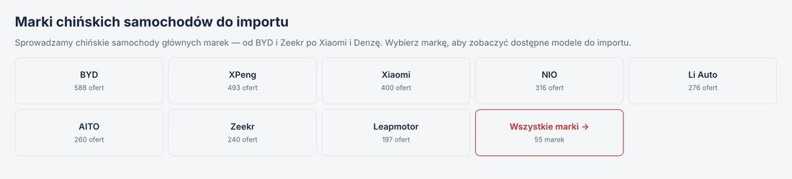
PrimaAutoSiatka marek z liczbą ofert pod nazwą każdej marki: BYD 588, XPeng 493, Xiaomi 400, NIO 316, Li Auto 276, AITO 260, Zeekr 240, Leapmotor 197 oraz kafel „Wszystkie marki → 55 marek”.
Dziś
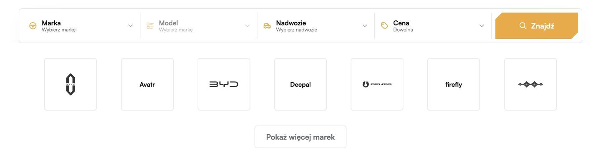
Dziś: wyszukiwarka i loga marek, bez liczby aut przy marce
Projekt
1Przy każdej marce liczba aut w ofercie (z feedu)
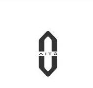
[liczba] aut
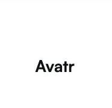
[liczba] aut
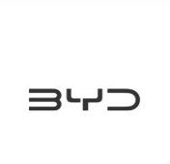
[liczba] aut
[liczba] aut
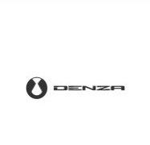
[liczba] aut
[liczba] aut
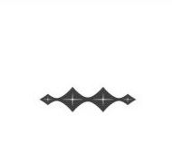
[liczba] aut
Pokaż więcej marek
Zmiany
= Bez zmianSekcja zostaje 1:1 (loga marek, „Pokaż więcej marek”).
✎ ZmianaPod każdym logo liczba aut tej marki w ofercie, liczona z feedu.
Znaczniki na projekcie
1HP-03.1✎ ZmianaLiczba aut przy marce
DlaczegoLoga marek nie mówią, ile jest wyboru; liczba aut przy marce odpowiada na „ile BYD-ów macie” bez klikania.kliknij, aby rozwinąć
słabaUX
Wzorce
PrimaAuto — liczba ofert pod każdą marką ✓
Uzasadnienie
Sekcja zostaje 1:1; pod każdym logo dochodzi liczba aut tej marki, liczona z feedu. Kupujący widzi, gdzie ma największy wybór, zanim wejdzie na listę.
Podstawa oceny siły
Wzorzec ma jeden importer (PrimaAuto); zmiana nie usuwa obawy kupującego, dlatego element jest opcjonalny. Wymaga liczb z feedu w czasie rzeczywistym.
Element → Akcja → Zdarzenie
Element: Siatka marek z liczbą aut pod logo Akcja: Kupujący wybiera markę z największym wyborem Zdarzenie: kliknięcie marki
słabaPsychologia sprzedaży
Mechanizm
Obciążenie poznawcze (Cognitive Load): liczba przy marce oszczędza krok — kupujący nie musi wchodzić na listę, żeby sprawdzić wybór. Sama liczba pokazuje też skalę oferty.
Źródło i klasa dowodu
Obciążenie poznawcze — klasa dowodu: przypadek (⚠️)
Granica
Przy małej ofercie liczby (1–3 auta na markę) mogą działać odwrotnie i pokazać brak wyboru. Marki bez aut ukrywamy albo oznaczamy „dostępne wkrótce”.
Obawa kupującego
Brak bezpośredniej obawy w bazie sytuacji zakupowych — element odpowiada na pytanie o wybór, nie na lęk (hipoteza). · Technologiczny i Łowca okazji z ogłoszeń — przychodzą z konkretną marką (hipoteza)
Uzasadnienie
Po pasku zaufania kupujący pyta: co konkretnie macie? Loga bez liczb to katalog. Liczba ofert przy marce to odpowiedź bez wchodzenia na listę — wygoda, a nie zdjęcie obawy, dlatego element jest opcjonalny.
Testy A/B — 5 propozycji · 1 z grafiką kliknij, aby rozwinąćTest 1 · A/BSiedem kart wyboru według potrzeby (nadwozie, napęd, budżet, dostępność) z liczbą aut; przycisk „Pokaż więcej …z grafiką
Hipoteza: Jeśli zamiast logo marek pokażemy cztery szybkie wybory według potrzeby (SUV, elektryczne, do 150 tys. zł, dostępne od ręki) z liczbą aut przy każdym, to więcej osób przejdzie na listę aut, bo kupujący nie zna chińskich marek (Avatr, Deepal, Voyah) i nie wybiera po nazwie, tylko po tym, czego potrzebuje.
Wariant ASiedem logo marek, pod każdym liczba aut, przycisk „Pokaż więcej marek”.
Wariant BSiedem kart wyboru według potrzeby (nadwozie, napęd, budżet, dostępność) z liczbą aut; przycisk „Pokaż więcej marek” zostaje.
Dlaczego pierwszy: Sprawdza założenie całej sekcji: że kupujący zaczyna od marki; wystarczą dane z feedu, które i tak są potrzebne.
Dowód: Logika kupującego (CS): lista marek na stronie to Avatr, Deepal, Firefly, Hongqi, IM — dla polskiego kupującego nieznane. W źródle: Baymard #1666 — nowi użytkownicy szukają punktu startu, nie pełnej listy.
Metryka główna: Przejście na listę aut — zdarzenie „klik w kartę marki lub wyboru”
Pomocnicze:
Liczba stron listy aut otwartych w sesji
Klik w kontakt
Warunek: Min. 300 sesji na wariant; liczby z feedu; wymaga danych o typie nadwozia i napędzie w feedzie.
Zastępczo: przed/po 14 dni + nagrania sesji: 20 sesji z kliknięciem w sekcję, policzyć, czy częściej kliknięto markę, czy potrzebę
Odwracalny
Wariant B — jak wygląda
SUV[liczba] aut
SUV 7-os.[liczba] aut
Elektryczne[liczba] aut
Plug-in hybryda[liczba] aut
Do 150 tys. zł[liczba] aut
Dostępne od ręki[liczba] aut
Z ochroną do [36] mies.[liczba] aut
Pokaż więcej marek
Test 2 · A/BKarta marki: logo, liczba aut i „od [kwota] zł do odbioru”.
Hipoteza: Jeśli pod liczbą aut przy marce dodamy „od [kwota] zł do odbioru”, to więcej osób kliknie markę, bo kupujący importu chce wiedzieć, czy marka mieści się w jego budżecie, zanim wejdzie na listę.
Wariant AKarta marki: logo i liczba aut.
Wariant BKarta marki: logo, liczba aut i „od [kwota] zł do odbioru”.
Dowód: Wzorzec rynku: Vehis — cena na kaflu od pierwszego widoku. W źródle: Baymard #792 — bez ceny użytkownik nie ocenia produktu.
Metryka główna: Przejście na listę aut — zdarzenie „klik w kartę marki”
Pomocnicze:
CTR sekcji marek
Liczba stron listy aut w sesji
Warunek: Min. 300 sesji na wariant; wymaga potwierdzonej ceny do odbioru (pytanie otwarte) i danych z feedu.
Zastępczo: przed/po 14 dni + nagrania sesji: 20 sesji z kliknięciem w sekcję marek, policzyć kliknięcia w kartę marki
Odwracalny
Test 3 · A/BMarki posortowane malejąco według liczby aut z feedu.
Hipoteza: Jeśli marki ustawimy od największej liczby dostępnych aut, to więcej osób kliknie markę, bo kupujący trafia najpierw tam, gdzie ma największy wybór, a nie na markę z jednym autem.
Wariant AMarki w ustalonej ręcznie kolejności.
Wariant BMarki posortowane malejąco według liczby aut z feedu.
Dowód: Wzorzec rynku: PrimaAuto — liczba ofert przy marce; baza taktyk — kolejność marek od największej liczby ofert.
Metryka główna: Przejście na listę aut — zdarzenie „klik w kartę marki”
Pomocnicze:
Liczba stron listy aut w sesji
Warunek: Min. 300 sesji na wariant; feed na żywo.
Zastępczo: przed/po 14 dni + nagrania sesji: 20 sesji z kliknięciem w sekcję marek, policzyć, które marki są klikane
Odwracalny
Test 4 · A/BSamo logo marki, bez liczby.
Hipoteza: Jeśli przy markach usuniemy liczbę aut, to klikalność marek nie spadnie, bo kupujący i tak wchodzi na listę, żeby zobaczyć auta; spadek oznaczałby, że liczba pracuje. Test sprawdza główne założenie rekomendacji.
Wariant ALogo marki z liczbą aut.
Wariant BSamo logo marki, bez liczby.
Dowód: Wzorzec rynku: PrimaAuto — liczba ofert przy każdej marce; liczby przy markach ma jeden importer z dziewięciu z sekcją marek.
Metryka główna: Przejście na listę aut — zdarzenie „klik w kartę marki”
Pomocnicze:
CTR sekcji marek
Warunek: Min. 300 sesji na wariant; test sensowny dopiero, gdy liczby są z feedu.
Zastępczo: przed/po 14 dni + nagrania sesji: 20 sesji z kliknięciem w sekcję marek, policzyć kliknięcia w kartę marki
Odwracalny
Test 5 · A/BMarki z zerową liczbą aut ukryte.
Hipoteza: Jeśli ukryjemy marki z zerową liczbą aut, to więcej osób przejdzie na listę aut z wynikami, bo kupujący nie trafi w pustą listę i nie straci zaufania.
Wariant AWszystkie marki widoczne, także z zerową liczbą aut.
Wariant BMarki z zerową liczbą aut ukryte.
Dowód: Baza taktyk: ukryj marki z zerową liczbą ofert lub oznacz „wkrótce”. Logika kupującego (CS).
Metryka główna: Przejście na listę aut — zdarzenie „klik w kartę marki, lista niepusta”
Pomocnicze:
Wejście na pustą listę (tylko wariant A)
Powrót z listy aut
Warunek: Min. 300 sesji na wariant; feed na żywo; test ma sens, gdy w feedzie są marki z zerem aut.
Zastępczo: przed/po 14 dni + policzyć wejścia na puste listy w obu okresach
Odwracalny
Decyzja Liczby ofert wymagają synchronizacji z feedem Guazi w czasie rzeczywistym.
HP-04
Najczęściej wybierane modele — nowy kafel
ZAMIANA
Sekcja zostaje (tytuł, 8 aut, przycisk). Każde auto dostaje nowy kafel — ten sam co na liście aut: raport Guazi, cena do odbioru w Polsce, rata, termin odbioru, a dla elektryków bateria i zasięg.
Najlepsze na rynku
PrimaAuto: status auta („W Polsce” / „W drodze”) i liczba sztuk są na kaflu, bez klikania.
PrimaAuto: nagłówek sekcji mówi wprost, że auta są na placu w Rzeszowie lub w drodze do niego.
PrimaAutoKafle aut z plakietkami dostępności pod nazwą modelu: zielone „W Polsce: 4”, niebieskie „W drodze: 3”. Nagłówek sekcji wyjaśnia, że to fizyczne pojazdy ze stocku w Rzeszowie, a nie ogłoszenia do zamówienia.
Dziś
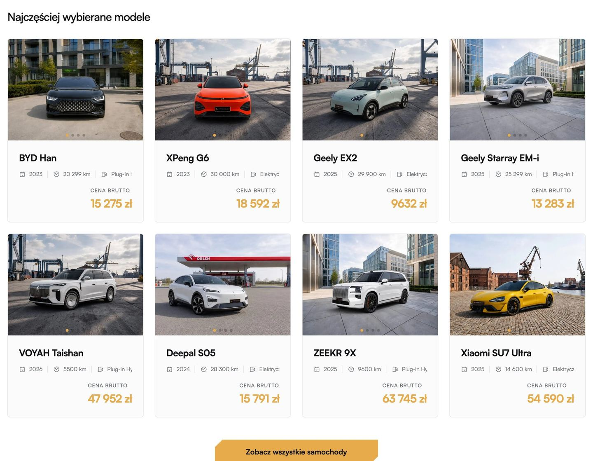
Dziś: „Najczęściej wybierane modele” — 8 kafli, bez statusu dostępności
Projekt
Najczęściej wybierane modele
1Nowy kafel: raport Guazi, cena do odbioru, rata, termin odbioru, bateria i zasięg dla elektryków
2WszystkieNa stanieW drodze(opcjonalnie)
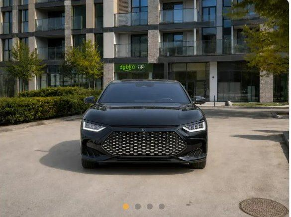
Raport Guazi · ocena [X]
BYD Han
[wersja · nadwozie]
202320 299 kmHybryda plug-in[X] kWh · zasięg [X] km WLTP
Cena do odbioru w Polsce
117 900 zł
leasing od [X] zł / mies.
z cłem, akcyzą, VAT, transportem, homologacją i rejestracją
📄 Zamów raport
Odbiór za [X] tyg.Ochrona do [36] mies.
Raport Guazi · ocena [X]
XPeng G6
580 Long Range · SUV elektryczny, 5 miejsc
202330 000 kmElektryczny[X] kWh · zasięg [X] km WLTP
Cena do odbioru w Polsce
149 900 zł
leasing od [X] zł / mies.
z cłem, akcyzą, VAT, transportem, homologacją i rejestracją
📄 Zamów raport
Odbiór za [X] tyg.Ochrona do [36] mies.
Raport Guazi · ocena [X]
Geely EX2
[wersja · nadwozie]
202529 900 kmElektryczny[X] kWh · zasięg [X] km WLTP
Cena do odbioru w Polsce
73 900 zł
leasing od [X] zł / mies.
z cłem, akcyzą, VAT, transportem, homologacją i rejestracją
📄 Zamów raport
Odbiór za [X] tyg.Ochrona do [36] mies.
Raport Guazi · ocena [X]
Geely Starray EM-i
[wersja · nadwozie]
202525 299 kmHybryda plug-in[X] kWh · zasięg [X] km WLTP
Cena do odbioru w Polsce
101 900 zł
leasing od [X] zł / mies.
z cłem, akcyzą, VAT, transportem, homologacją i rejestracją
📄 Zamów raport
Odbiór za [X] tyg.Ochrona do [36] mies.
Raport Guazi · ocena [X]
VOYAH Taishan
[wersja · nadwozie]
20265 500 kmHybryda plug-in[X] kWh · zasięg [X] km WLTP
Cena do odbioru w Polsce
368 900 zł
leasing od [X] zł / mies.
z cłem, akcyzą, VAT, transportem, homologacją i rejestracją
📄 Zamów raport
Odbiór za [X] tyg.Ochrona do [36] mies.
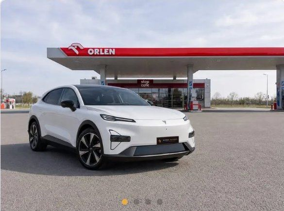
Raport Guazi · ocena [X]
Deepal S05
[wersja · nadwozie]
202428 300 kmElektryczny[X] kWh · zasięg [X] km WLTP
Cena do odbioru w Polsce
121 900 zł
leasing od [X] zł / mies.
z cłem, akcyzą, VAT, transportem, homologacją i rejestracją
📄 Zamów raport
Odbiór za [X] tyg.Ochrona do [36] mies.
Raport Guazi · ocena [X]
ZEEKR 9X
[wersja · nadwozie]
20259 600 kmHybryda plug-in[X] kWh · zasięg [X] km WLTP
Cena do odbioru w Polsce
490 900 zł
leasing od [X] zł / mies.
z cłem, akcyzą, VAT, transportem, homologacją i rejestracją
📄 Zamów raport
Odbiór za [X] tyg.Ochrona do [36] mies.
Raport Guazi · ocena [X]
Xiaomi SU7 Ultra
[wersja · nadwozie]
202514 600 kmElektryczny[X] kWh · zasięg [X] km WLTP
Cena do odbioru w Polsce
419 900 zł
leasing od [X] zł / mies.
z cłem, akcyzą, VAT, transportem, homologacją i rejestracją
📄 Zamów raport
Odbiór za [X] tyg.Ochrona do [36] mies.
Zobacz wszystkie samochody
Ceny i parametry przykładowe — dane z feedu po podpięciu.
Zmiany
✎ ZmianaNowy kafel w miejsce obecnego (ten sam co na liście aut i w „Zobacz również”).
＋ NoweOpcjonalnie: zakładki Wszystkie / Na stanie / W drodze nad kaflami.
Znaczniki na projekcie
1HP-04.1✎ ZmianaNowy kafel
2HP-04.2＋ NoweZakładki statusu (opcjonalne)
DlaczegoKupujący z terminem i budżetem odrzuca auta bez danych; nowy kafel (raport, cena do odbioru, rata, termin) daje mu je bez klikania.kliknij, aby rozwinąć
Sekcja zostaje (tytuł, osiem aut, przycisk), zmienia się kafel — ten sam co na liście aut i w „Zobacz również”. Status dostępności, raport Guazi, cena do odbioru, rata i termin na kaflu pozwalają ocenić auto bez wchodzenia w kartę. Jeden kafel w całym serwisie znaczy, że kupujący uczy się go raz.
Podstawa oceny siły
Status dostępności na kaflu strony głównej ma jeden z 15 sklepów z karuzelą (PrimaAuto). Uzasadnienie poszczególnych pól kafla jest w rekomendacjach listy aut.
Element → Akcja → Zdarzenie
Element: Kafel auta w karuzeli „Najczęściej wybierane modele” Akcja: Kupujący porównuje auta w karuzeli po cenie do odbioru, racie i terminie Zdarzenie: kliknięcie kafla w karuzeli
średniaPsychologia sprzedaży
Mechanizm
Obciążenie poznawcze (Cognitive Load): te same dane w tym samym miejscu na każdym kaflu pozwalają porównywać bez czytania od nowa. Kotwica (Anchoring): pierwsze widziane auto i jego cena ustawiają punkt odniesienia dla kolejnych — dlatego kolejność aut ma znaczenie.
Kolejność aut (kotwica ceny, źródło wejścia, najlepszy raport) to warianty do testu, nie wdrożenie. Kafel bez danych dla danego auta nie pokazuje pustych pól.
Obawa kupującego
„Auto poszło do kasacji po stłuczce — nowe potrzebuję w ciągu kilku tygodni” — termin to pierwsze pytanie (hipoteza; 10 z 692 pytań w polu pytań, zbudowanym z fraz wyszukiwań i dyskusji, nie ankieta) · „Za te pieniądze chcę dostać więcej auta, niż kupię w Polsce” (udowodnione ✅✅; 27 z 692) · Rodzina i Firma/flota z pilną potrzebą; wszystkie grupy porównujące cenę
Uzasadnienie
Karuzela to pierwsze miejsce, gdzie kupujący widzi konkretne auta. Jeśli kafel nie mówi, ile auto kosztuje do odbioru i kiedy można je odebrać, kupujący z terminem albo z budżetem nie ma podstaw, żeby kliknąć.
Testy A/B — 5 propozycji · 1 z grafiką kliknij, aby rozwinąćTest 1 · A/BNad kaflami zakładki „Wszystkie / Na stanie / W drodze”, domyślnie „Wszystkie”.z grafiką
Hipoteza: Jeśli nad kaflami aut dodamy zakładki „Wszystkie / Na stanie / W drodze”, to więcej osób przejdzie na kartę auta, bo kupujący, który pilnie potrzebuje auta, chce od razu wiedzieć, które można odebrać szybko, a które trzeba sprowadzić.
Wariant AOsiem kafli aut bez podziału na dostępność (zakładki są opcjonalne w projekcie).
Wariant BNad kaflami zakładki „Wszystkie / Na stanie / W drodze”, domyślnie „Wszystkie”.
Dlaczego pierwszy: Odpowiada na pytanie „kiedy będę miał auto” jednym kliknięciem; koszt to jedno pole w feedzie.
Dowód: Wzorzec rynku: PrimaAuto — miejsce 1 z 15 w rankingu karuzeli, status „Na stanie” i „W drodze” widoczny na kaflu.
Metryka główna: Przejście na kartę auta — zdarzenie „klik w kafel auta”
Pomocnicze:
Klik w zakładkę „Na stanie”
Klik w kontakt po przejściu z kafla
Warunek: Min. 200 sesji na wariant; wymaga w feedzie danych o dostępności (na stanie / w drodze), których dziś China Select nie potwierdziło.
Zastępczo: przed/po 14 dni + nagrania sesji: 20 sesji z kafelkami, policzyć kliknięcia w zakładki „Na stanie” / „W drodze” i w kafle
Odwracalny
Wariant B — jak wygląda
Najczęściej wybierane modele
WszystkieNa stanieW drodze
Raport Guazi · ocena [X]
BYD Han
[wersja · nadwozie]
202320 299 kmHybryda plug-in[X] kWh · zasięg [X] km WLTP
Cena do odbioru w Polsce
117 900 zł
leasing od [X] zł / mies.
z cłem, akcyzą, VAT, transportem, homologacją i rejestracją
📄 Zamów raport
Odbiór za [X] tyg.Ochrona do [36] mies.
Raport Guazi · ocena [X]
XPeng G6
580 Long Range · SUV elektryczny, 5 miejsc
202330 000 kmElektryczny[X] kWh · zasięg [X] km WLTP
Cena do odbioru w Polsce
149 900 zł
leasing od [X] zł / mies.
z cłem, akcyzą, VAT, transportem, homologacją i rejestracją
📄 Zamów raport
Odbiór za [X] tyg.Ochrona do [36] mies.
Raport Guazi · ocena [X]
Geely EX2
[wersja · nadwozie]
202529 900 kmElektryczny[X] kWh · zasięg [X] km WLTP
Cena do odbioru w Polsce
73 900 zł
leasing od [X] zł / mies.
z cłem, akcyzą, VAT, transportem, homologacją i rejestracją
📄 Zamów raport
Odbiór za [X] tyg.Ochrona do [36] mies.
Raport Guazi · ocena [X]
Geely Starray EM-i
[wersja · nadwozie]
202525 299 kmHybryda plug-in[X] kWh · zasięg [X] km WLTP
Cena do odbioru w Polsce
101 900 zł
leasing od [X] zł / mies.
z cłem, akcyzą, VAT, transportem, homologacją i rejestracją
📄 Zamów raport
Odbiór za [X] tyg.Ochrona do [36] mies.
Raport Guazi · ocena [X]
VOYAH Taishan
[wersja · nadwozie]
20265 500 kmHybryda plug-in[X] kWh · zasięg [X] km WLTP
Cena do odbioru w Polsce
368 900 zł
leasing od [X] zł / mies.
z cłem, akcyzą, VAT, transportem, homologacją i rejestracją
📄 Zamów raport
Odbiór za [X] tyg.Ochrona do [36] mies.
Raport Guazi · ocena [X]
Deepal S05
[wersja · nadwozie]
202428 300 kmElektryczny[X] kWh · zasięg [X] km WLTP
Cena do odbioru w Polsce
121 900 zł
leasing od [X] zł / mies.
z cłem, akcyzą, VAT, transportem, homologacją i rejestracją
📄 Zamów raport
Odbiór za [X] tyg.Ochrona do [36] mies.
Raport Guazi · ocena [X]
ZEEKR 9X
[wersja · nadwozie]
20259 600 kmHybryda plug-in[X] kWh · zasięg [X] km WLTP
Cena do odbioru w Polsce
490 900 zł
leasing od [X] zł / mies.
z cłem, akcyzą, VAT, transportem, homologacją i rejestracją
📄 Zamów raport
Odbiór za [X] tyg.Ochrona do [36] mies.
Raport Guazi · ocena [X]
Xiaomi SU7 Ultra
[wersja · nadwozie]
202514 600 kmElektryczny[X] kWh · zasięg [X] km WLTP
Cena do odbioru w Polsce
419 900 zł
leasing od [X] zł / mies.
z cłem, akcyzą, VAT, transportem, homologacją i rejestracją
📄 Zamów raport
Odbiór za [X] tyg.Ochrona do [36] mies.
Zobacz wszystkie samochody
Ceny i parametry przykładowe — dane z feedu po podpięciu.
Test 2 · A/BPlakietka „Raport Guazi · ocena [litera]”.
Hipoteza: Jeśli plakietka „Raport Guazi” na kaflu pokaże też ocenę stanu („Raport Guazi · ocena [A]”), to więcej osób przejdzie na kartę auta, bo kupujący widzi jakość auta bez otwierania karty, a sama nazwa raportu nic nie mówi o stanie.
Dowód: Wzorzec rynku: DriveWave — jasne dane stanu auta na kaflu. Guazi — ocena literowa w raporcie.
Metryka główna: Przejście na kartę auta — zdarzenie „klik w kafel auta”
Pomocnicze:
Prośba o raport Guazi po wejściu z kafla
Warunek: Min. 200 sesji na wariant; wymaga oceny z raportu Guazi w feedzie per auto; karta auta (raport dwupoziomowy) wdrożona wcześniej.
Zastępczo: przed/po 14 dni + nagrania sesji: 20 sesji z kliknięciem w kafel
Odwracalny
Test 3 · A/BOsiem aut od najtańszego.
Hipoteza: Jeśli osiem aut ustawimy od najtańszego, to więcej osób przejdzie na kartę auta, bo kupujący importu zaczyna od pytania „czy w ogóle mnie stać” i od niskiej ceny łatwiej wchodzi w rozmowę.
Wariant AOsiem aut w kolejności „najczęściej wybierane”.
Wariant BOsiem aut od najtańszego.
Dowód: Logika kupującego (CS). Hipoteza własna, brak wyniku w źródle; w bazie taktyk jest przeciwny pomysł (najdroższy pierwszy jako kotwica), więc test rozstrzygnie.
Metryka główna: Przejście na kartę auta — zdarzenie „klik w kafel auta”
Pomocnicze:
Klik w kontakt
Liczba kafli obejrzanych w sesji
Warunek: Min. 300 sesji na wariant; różnice cen na kaflach są duże (od 9 632 zł do 63 745 zł w dzisiejszej ofercie), więc test warto powtórzyć po zmianie oferty.
Zastępczo: przed/po 14 dni + nagrania sesji: 20 sesji z przewinięciem po kaflach
Odwracalny
Test 4 · A/BCztery kafle i przycisk „Zobacz wszystkie auta”.
Hipoteza: Jeśli zmniejszymy sekcję z ośmiu do czterech kafli i dodamy przycisk „Zobacz wszystkie auta”, to więcej osób przejdzie na kartę auta, bo kupujący zdezorientowany szerokim wyborem nie wybiera nic.
Wariant AOsiem kafli.
Wariant BCztery kafle i przycisk „Zobacz wszystkie auta”.
Dowód: Logika kupującego (CS). Hipoteza własna, brak wyniku w źródle.
Metryka główna: Przejście na kartę auta lub listę aut — zdarzenie „klik w kafel albo w Zobacz wszystkie”
Pomocnicze:
Przewinięcie do kolejnych sekcji
Czas w sekcji
Warunek: Min. 300 sesji na wariant.
Zastępczo: przed/po 14 dni + nagrania sesji: 20 sesji, policzyć, ile osób klika „Zobacz wszystkie auta” i ile w kafel
Odwracalny
Test 5 · A/BGłówna cena: „rata od [X] zł / mies.”, cena do odbioru mniejszym drukiem.
Hipoteza: Jeśli na kaflu główną ceną będzie rata miesięczna, a cena do odbioru mniejszym drukiem, to więcej osób przejdzie na kartę auta, bo kupujący finansujący auto myśli ratą, nie całą kwotą.
Wariant AGłówna cena: „Cena do odbioru w Polsce”, rata mniejszym drukiem.
Wariant BGłówna cena: „rata od [X] zł / mies.”, cena do odbioru mniejszym drukiem.
Dowód: Wzorzec rynku: Vehis — cena brutto i rata na każdym kaflu. Logika kupującego (CS).
Metryka główna: Przejście na kartę auta — zdarzenie „klik w kafel auta”
Pomocnicze:
Klik w kontakt
Warunek: Warunek twardy: decyzja o finansowaniu i wyliczona rata; bez niej test się nie odbywa.
Zastępczo: przed/po 14 dni + nagrania sesji: 20 sesji z kliknięciem w kafel, policzyć, czy częściej klika się auta z niską ratą
Odwracalny
Taktyki
w projekcie
Najpierw auta dostępne od ręki (na stanie w Polsce), potem „w drodze” — kupujący z pilną potrzebą od razu widzi, co może odebrać.logika kupującego (CS): sytuacja „nagła potrzeba auta” — termin odbioru to pierwsze pytanie; wzorzec rynku: Yanvia dzieli ofertę na Na stanie / W drodze
Pierwszy rząd = przekrój sytuacji zakupowych: SUV rodzinny, pierwszy elektryk, hybryda bez ładowarki, auto w niższym budżecie — każdy kupujący znajduje „swoje” auto bez przewijania.logika kupującego (CS): najczęstsze sytuacje — rodzina, pierwszy elektryk, przesiadka z EV, budżet
rezerwa
Kotwica ceny: na pierwszej pozycji auto z wyższej półki (np. ZEEKR 9X), obok tańsze — kolejne ceny wyglądają rozsądniej.psychologia: efekt kotwicy (Tversky i Kahneman) — pierwsza widziana cena ustawia punkt odniesienia
Kolejność wg źródła wejścia: kto przyszedł z reklamy SUV-a albo z frazy „elektryk z Chin”, widzi te auta na początku (parametr w adresie z reklamy).spójność reklamy i strony docelowej (message match); dziś wszyscy widzą tę samą ósemkę
Na początku auta z najlepszym raportem Guazi (wysoka ocena, niski przebieg, młody rocznik) z plakietką raportu — pierwsze wrażenie: „tu są sprawdzone, dobre egzemplarze”.logika kupującego (CS): obawa o stan auta kupowanego na odległość; raport Guazi to przewaga China Select
HP-05
Proces zakupu — uzupełnienie funkcji
UZUPEŁNIENIE FUNKCJI
Sekcja „Twój samochód w 5 prostych krokach” zostaje w obecnym wyglądzie. Uzupełniamy tylko funkcje: raport Guazi z nazwą i prośbą o pełny raport w kroku 2 oraz czas przy krokach.
Dziś
Dziś: „Twój samochód w 5 prostych krokach”
Projekt
2[X] dni
[X] dni
[X] dni
[X] dni
[X] dni
1Raport Guazi · „Zamów przykładowy raport”
Wygląd bez zmian — uzupełniamy funkcje
1Krok „Poznajesz samochód”: raport z nazwą Guazi i link „Zamów przykładowy raport” (pełny raport po kontakcie).
2Przy każdym kroku orientacyjny czas, gdy będą dane (dziś: [X] dni).
Zmiany
= Bez zmianWygląd bez zmian.
✎ ZmianaKrok 2 („Poznajesz samochód”): raport z nazwą Guazi + „Zamów przykładowy raport” (pełny raport po kontakcie).
✎ ZmianaCzas przy krokach — gdy będą dane.
Znaczniki na projekcie
1HP-05.1✎ ZmianaRaport Guazi w kroku 2
2HP-05.2✎ ZmianaCzas przy krokach
DlaczegoKroki bez czasu to mapa bez skali; nazwa raportu Guazi i czas przy krokach pokazują kupującemu, co się dzieje między wpłatą a odbiorem.kliknij, aby rozwinąć
średniaUX
Uzasadnienie
Sekcja zostaje w obecnym wyglądzie. W kroku 2 dochodzi nazwa raportu Guazi i prośba o pełny raport, a przy krokach czas — gdy China Select poda dane.
Podstawa oceny siły
Sekcję procesu ma 7 z 16 przebadanych stron głównych; orientację czasową podają wprost 3 z 16.
Element → Akcja → Zdarzenie
Element: Sekcja „Twój samochód w 5 prostych krokach” Akcja: Kupujący prosi o raport Guazi z kroku 2 Zdarzenie: prośba o raport z sekcji procesu
średniaPsychologia sprzedaży
Mechanizm
Lęk przed oczekiwanym złym zdarzeniem (Dread Aversion) i iluzja wysiłku (Labor Illusion): nazwane etapy z czasem zmniejszają lęk przed niewiadomą, a widoczna praca (inspekcja Guazi) podnosi wartość obsługi.
Źródło i klasa dowodu
Lęk przed oczekiwanym złym zdarzeniem — klasa dowodu: przypadek (⚠️)
Granica
Czas podajemy widełkami i tylko potwierdzony; niedotrzymany termin szkodzi bardziej niż brak terminu.
Obawa kupującego
„Nigdy nie sprowadzałem auta spoza Unii — nie wiem, co mnie czeka w urzędach” (prawdopodobne ✅; 44 z 692 pytań w polu pytań, zbudowanym z fraz wyszukiwań i dyskusji, nie ankieta) · Samodzielny importer, Łowca okazji z ogłoszeń, Rodzina, Kalkulator kosztów, Technologiczny
Uzasadnienie
Kupujący musi zrozumieć cały łańcuch, zanim wejdzie głębiej. Uzupełnienie istniejącej sekcji o czas i nazwę raportu odpowiada na pytanie „co mnie czeka” bez przebudowy.
Testy A/B — 5 propozycji · 1 z grafiką kliknij, aby rozwinąćTest 1 · A/BPięć kroków, pod każdym czas: [X] dni lub [X] tygz grafiką
Hipoteza: Jeśli przy każdym kroku procesu pokażemy orientacyjny czas, to więcej osób kliknie w kontakt, bo kupujący importu obawia się, jak długo będzie czekać, a dziś nie ma tego ani w procesie, ani w FAQ.
Wariant APięć kroków bez czasu (krok „Poznajesz” z nazwą Guazi).
Wariant BPięć kroków, pod każdym czas: [X] dni lub [X] tyg. Reszta bez zmian.
Dlaczego pierwszy: Czas to druga co do ważności obawa po koszcie, a dziś nie ma go nigdzie; zmiana to jedna liczba na krok.
Dowód: Wzorzec rynku: AutoChina — „12-16 tyg.” w metrykach hero; MyChinaPal — czasy transportu przy każdej opcji. Karta czytania China Select: czas dostawy — brak, FAQ bez liczby.
Metryka główna: Klik w kontakt — zdarzenie „klik w telefon, WhatsApp lub Zamów rozmowę” po przewinięciu sekcji
Pomocnicze:
Przewinięcie poza sekcję procesu
Wejście na listę aut
Warunek: Min. 200 sesji na wariant; czasy musi podać China Select; bez nich test się nie odbywa.
Zastępczo: przed/po 14 dni + pytania „ile trwa” w rozmowach z doradcami: policzyć przed i po
Odwracalny
Wariant B — jak wygląda
PROCES ZAKUPU
Twój samochód w 5 prostych krokach
1
Wybierasz samochód
Wybierz model dopasowany do Twoich potrzeb i budżetu.
Rezerwujemy auto i rozpoczynamy przygotowanie go do wydania.
[X] dni
4
My zajmujemy się formalnościami
Dokumenty i rejestracja po naszej stronie.
[X] tyg.
5
Odbierasz i jedziesz
Odbierasz zarejestrowany samochód i cieszysz się jazdą.
[X] dni
Test 2 · A/BKroki jako linki: 1 do listy aut, 2 do sekcji z raportem, 4 do pytań i odpowiedzi.
Hipoteza: Jeśli kroki procesu będą klikalne (krok „Poznajesz” prowadzi do przykładowego raportu, „Wybierasz” na listę aut), to więcej osób przejdzie dalej, bo kupujący intuicyjnie klika kroki, a martwy tekst kończy ścieżkę.
Wariant AKroki jako tekst, bez linków.
Wariant BKroki jako linki: 1 do listy aut, 2 do sekcji z raportem, 4 do pytań i odpowiedzi.
Dowód: W źródle: Baymard #613 — użytkownicy klikają kroki procesu (źródło dotyczy kroków kasy), statyczny tekst tego nie obsługuje.
Metryka główna: Przejście na listę aut lub kartę — zdarzenie „klik w krok procesu”
Pomocnicze:
Prośba o raport Guazi
Klik w kontakt
Warunek: Min. 200 sesji na wariant; potrzebne cele linków.
Zastępczo: przed/po 14 dni + nagrania sesji: czy kupujący próbuje klikać kroki w wariancie A
Odwracalny
Test 3 · A/BKrok „Rezerwujesz” z jednym zdaniem o zaliczce i reszcie po dostawie.
Hipoteza: Jeśli w kroku „Rezerwujesz” dodamy zdanie „Zaliczka rezerwuje auto, resztę płacisz po dostawie do Polski”, to więcej osób kliknie w kontakt, bo kupujący na odległość obawia się, kiedy płaci i ile ryzykuje.
Wariant AKrok „Rezerwujesz” bez informacji o płatności.
Wariant BKrok „Rezerwujesz” z jednym zdaniem o zaliczce i reszcie po dostawie.
Dowód: Karta czytania China Select: w procesie brak kwot i zaliczki; model płatności jest dziś tylko w sekcji bezpieczeństwa. Logika kupującego (CS).
Metryka główna: Klik w kontakt — zdarzenie „klik w telefon, WhatsApp lub Zamów rozmowę”
Pomocnicze:
Przewinięcie do sekcji bezpieczeństwa
Warunek: Min. 200 sesji na wariant; zdanie jest zgodne z tym, co jest dziś w sekcji bezpieczeństwa.
Zastępczo: przed/po 14 dni + nagrania sesji: 20 sesji z przewinięciem przez sekcję procesu, policzyć kliknięcia w kontakt tuż po kroku „Rezerwujesz”
Odwracalny
Test 4 · A/BSześć kroków: dodany „Przygotowujemy auto w Polsce” (przegląd, homologacja).
Hipoteza: Jeśli dodamy krok „Przygotowujemy auto w Polsce” między transportem a odbiorem, to więcej osób kliknie w kontakt, bo kupujący obawia się, co dzieje się z autem po dotarciu do Polski.
Wariant APięć kroków; krok 4 „My zajmujemy się formalnościami”.
Wariant BSześć kroków: dodany „Przygotowujemy auto w Polsce” (przegląd, homologacja).
Dowód: Wzorzec rynku: DriveWave — miejsce 1 z 7 sklepów z sekcją procesu, krok „05 Przygotowujemy auto w Polsce”.
Metryka główna: Klik w kontakt — zdarzenie „klik w telefon, WhatsApp lub Zamów rozmowę”
Pomocnicze:
Przewinięcie poza sekcję procesu
Warunek: Min. 200 sesji na wariant; China Select potwierdza, co faktycznie robi z autem w Polsce.
Zastępczo: przed/po 14 dni + pytania „co z autem w Polsce” w rozmowach z doradcami: policzyć w 20 pierwszych rozmowach przed i po
Odwracalny
Test 5 · A/BKrok z formalnościami i orientacyjną kwotą [X]% ceny.
Hipoteza: Jeśli w kroku z formalnościami dodamy orientacyjny koszt (cło i VAT jako [X]% ceny auta), to więcej osób kliknie w kontakt, bo kupujący importu obawia się niewidocznych kwot.
Wariant AKrok z formalnościami bez kwot.
Wariant BKrok z formalnościami i orientacyjną kwotą [X]% ceny.
Dowód: Wzorzec rynku: AutoChina — kalkulator kosztów importu zlinkowany w kroku procesu. W źródle: Baymard #825 — pełny koszt przed decyzją.
Metryka główna: Klik w kontakt — zdarzenie „klik w telefon, WhatsApp lub Zamów rozmowę”
Pomocnicze:
Przewinięcie poza sekcję procesu
Warunek: Warunek twardy: China Select decyduje o ujawnieniu składowych ceny; bez tego test się nie odbywa.
Zastępczo: przed/po 14 dni + pytania o cło w rozmowach z doradcami
Odwracalny
Decyzja Orientacja kosztowa (cło + VAT) wymaga decyzji o ujawnieniu składowych ceny.
HP-06
Gwarancja bezpieczeństwa — uzupełnienie funkcji
UZUPEŁNIENIE FUNKCJI
Sekcja zostaje w obecnym wyglądzie. Uzupełniamy jedną funkcję: z paska „Raport techniczny PDF” można poprosić o przykładowy raport — zapytanie trafia do doradcy. Pozostałe pomysły (nazwa Guazi w opisie raportu, płatność potwierdzona raportem) idą do testów A/B.
Dziś
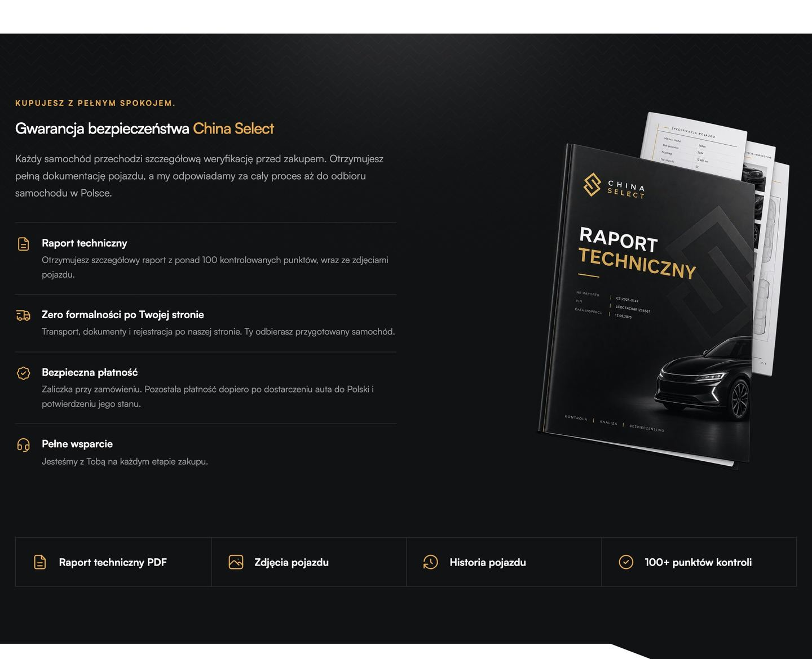
Dziś: „Kupujesz z pełnym spokojem — Gwarancja bezpieczeństwa China Select”
Projekt
1Zamów przykładowy raport → e-mail / WhatsApp
Wygląd bez zmian — uzupełniamy funkcje
1„Raport techniczny PDF” w dolnym pasku działa: „Zamów przykładowy raport” → e-mail / WhatsApp (zapytanie trafia do doradcy).
DlaczegoKupujący pyta, co stanie się z jego pieniędzmi; przykładowy raport na prośbę pokazuje, czym jest potwierdzenie stanu przed dopłatą.kliknij, aby rozwinąć
średniaUX
Uzasadnienie
Sekcja zostaje w obecnym wyglądzie — jej model płatności („zaliczka przy zamówieniu, reszta po dostarczeniu i potwierdzeniu stanu”) jest jasny i bez gwiazdek. Dochodzi jedna funkcja: z paska „Raport techniczny PDF” można poprosić o przykładowy raport, a zapytanie trafia do doradcy.
Podstawa oceny siły
Raport inspekcji to brak o pierwszym priorytecie na liście braków (pewne). Pozostałe pomysły (nazwa Guazi w opisie raportu, płatność spięta z raportem) idą do testów.
Element → Akcja → Zdarzenie
Element: Przycisk „Zamów przykładowy raport” w pasku „Raport techniczny PDF” Akcja: Kupujący prosi o przykładowy raport Zdarzenie: prośba o przykładowy raport
mocnaPsychologia sprzedaży
Mechanizm
Niechęć do straty (Loss Aversion): płatność podzielona na zaliczkę i resztę po potwierdzeniu stanu ogranicza możliwą stratę do zaliczki. Przykładowy raport zamienia słowa „potwierdzenie stanu” w dokument, który kupujący widzi przed decyzją.
Źródło i klasa dowodu
Niechęć do straty — klasa dowodu: badanie (✅)
Granica
Przykładowy raport musi być prawdziwy (zanonimizowany), nie demonstracyjny. Prawo odstąpienia od umowy to wymóg prawny, a nie argument do testu.
Obawa kupującego
„Mam wpłacić zaliczkę za auto, które stoi w Chinach, a nie mogę go obejrzeć” (prawdopodobne ✅; 20 z 692 pytań w polu pytań, zbudowanym z fraz wyszukiwań i dyskusji, nie ankieta) · siedem z ośmiu grup
Uzasadnienie
To sekcja, która odpowiada wprost na pytanie „co się stanie z moimi pieniędzmi?”. Prośba o przykładowy raport realizuje ustalenie zespołu: streszczenie pokazujemy, pełny raport wysyłamy po kontakcie — i zbiera zapytania od osób, które boją się zakupu na odległość.
Testy A/B — 5 propozycji · 1 z grafiką kliknij, aby rozwinąćTest 1 · A/BWiersz „Bezpieczna płatność”: „Zaliczka przy zamówieniuz grafiką
Hipoteza: Jeśli zdanie o płatności połączymy z raportem Guazi („Resztę płacisz, gdy auto jest w Polsce, a jego stan potwierdza raport Guazi”), to więcej osób kliknie w kontakt, bo kupujący na odległość obawia się przede wszystkim, że zapłaci za auto, którego stanu nie zna, a tu płatność zależy od dowodu.
Wariant AWiersz „Bezpieczna płatność”: „Zaliczka przy zamówieniu. Pozostała płatność dopiero po dostarczeniu auta do Polski i potwierdzeniu jego stanu.”
Wariant BWiersz „Bezpieczna płatność”: „Zaliczka przy zamówieniu. Resztę płacisz, gdy auto jest w Polsce, a jego stan potwierdza raport Guazi.” Zmienia się wyłącznie to zdanie.
Dlaczego pierwszy: Jedno zdanie, zero kosztu, a adresuje centralną obawę zakupu na odległość i wiąże płatność z dowodem.
Dowód: Karta czytania China Select: model płatności jest jedyną sekcją, która odpowiada na pytanie „co z moimi pieniędzmi”. Baza taktyk: spięcie płatności z raportem w jednym zdaniu. Logika kupującego (CS).
Metryka główna: Klik w kontakt — zdarzenie „klik w telefon, WhatsApp lub Zamów rozmowę” po przewinięciu sekcji
Pomocnicze:
Prośba o raport Guazi
Przewinięcie do sekcji opinii
Warunek: Min. 150 sesji na wariant; sekcja partnera (raport Guazi) wdrożona wcześniej lub równocześnie; zgoda China Select na nazwę Guazi przy płatności.
Zastępczo: przed/po 14 dni + nagrania sesji: 20 sesji z kliknięciem w kontakt po sekcji
Odwracalny
Wariant B — jak wygląda
KUPUJESZ Z PEŁNYM SPOKOJEM.
Gwarancja bezpieczeństwa China Select
Każdy samochód przechodzi szczegółową weryfikację przed zakupem. Otrzymujesz pełną dokumentację pojazdu, a my odpowiadamy za cały proces aż do odbioru samochodu w Polsce.
Raport techniczny
Otrzymujesz szczegółowy raport z ponad 100 kontrolowanych punktów, wraz ze zdjęciami pojazdu.
Zero formalności po Twojej stronie
Transport, dokumenty i rejestracja po naszej stronie. Ty odbierasz przygotowany samochód.
Bezpieczna płatność
Zaliczka przy zamówieniu. Resztę płacisz, gdy auto jest w Polsce, a jego stan potwierdza raport Guazi.
Pełne wsparcie
Jesteśmy z Tobą na każdym etapie zakupu.
Raport techniczny PDFZamów przykładowy raport →
Zdjęcia pojazdu
Historia pojazdu
100+ punktów kontroli
Test 2 · A/BWiersz „Raport inspekcji Guazi”: „Otrzymujesz raport inspekcji Guazi z ponad 100 kontrolowanych punktów, wraz …
Hipoteza: Jeśli w opisie raportu dodamy nazwę Guazi („Raport inspekcji Guazi — ponad 100 kontrolowanych punktów”), to więcej osób poprosi o raport, bo kupujący nie wie, kto wystawia raport, a nazwa znanej platformy czyni go wiarygodnym.
Wariant AWiersz „Raport techniczny”: „Otrzymujesz szczegółowy raport z ponad 100 kontrolowanych punktów, wraz ze zdjęciami pojazdu.”
Wariant BWiersz „Raport inspekcji Guazi”: „Otrzymujesz raport inspekcji Guazi z ponad 100 kontrolowanych punktów, wraz ze zdjęciami pojazdu.”
Dowód: Karta czytania China Select: sekcja nie wymienia nazwy Guazi. Wzorzec rynku: Guazi — pełny raport stanu jako wyróżnik.
Warunek: Min. 150 sesji na wariant; zgoda China Select i Guazi na nazwę oraz potwierdzenie liczby punktów (100+ lub 200+).
Zastępczo: przed/po 14 dni + nagrania sesji: 20 sesji z sekcją w widoku, policzyć kliknięcia w „Zamów przykładowy raport”
Odwracalny
Test 3 · A/BPod wierszami mały blok: zdjęcie, imię i rola doradcy oraz zdanie o odpowiedzialności.
Hipoteza: Jeśli dodamy zdjęcie i imię doradcy z podpisem „Osobiście odpowiadam za proces”, to więcej osób kliknie w kontakt, bo kupujący wydaje dużą kwotę firmie, której nie widział, i człowiek z imieniem obniża dystans.
Wariant ASekcja bez twarzy.
Wariant BPod wierszami mały blok: zdjęcie, imię i rola doradcy oraz zdanie o odpowiedzialności.
Dowód: Wzorzec rynku: MyChinaPal — dziesięć osób ze zdjęciami, imionami i rolami. Karta czytania China Select: brak zespołu i adresu na stronie.
Metryka główna: Klik w kontakt — zdarzenie „klik w telefon, WhatsApp lub Zamów rozmowę”
Pomocnicze:
Prośba o raport Guazi
Przewinięcie do sekcji opinii
Warunek: Min. 150 sesji na wariant; wymaga zgody osoby ze zdjęcia i naszego wyboru, kto się pokazuje.
Zastępczo: przed/po 14 dni + nagrania sesji: 20 sesji z przewinięciem przez sekcję bezpieczeństwa, policzyć kliknięcia w kontakt
Odwracalny
Test 4 · A/BLink „Zobacz stronę przykładowego raportu” otwiera podgląd zanonimizowanej strony; przycisk „Poproś o pełny ra…
Hipoteza: Jeśli kupujący może zobaczyć jedną stronę przykładowego raportu bez kontaktu, to więcej osób potem kliknie w kontakt, bo zobaczony dokument usuwa obawę o to, co dostanie.
Wariant A„Zamów przykładowy raport” prowadzi do kontaktu; raport przychodzi po kontakcie.
Wariant BLink „Zobacz stronę przykładowego raportu” otwiera podgląd zanonimizowanej strony; przycisk „Poproś o pełny raport” zostaje.
Dowód: Baza taktyk (zasady sprzedaży): próbki i wypróbowanie łamią inercję lepiej niż opis. Logika kupującego (CS).
Metryka główna: Klik w kontakt — zdarzenie „klik Poproś o pełny raport” po otwarciu podglądu
Pomocnicze:
Otwarcia podglądu
Wysłanie formularza
Warunek: Wymaga zgody China Select na pokazanie zanonimizowanej strony bez kontaktu (ustalenie: pełny raport po kontakcie, podgląd to osobna decyzja).
Zastępczo: przed/po 14 dni + nagrania sesji: 20 sesji z sekcją w widoku, policzyć otwarcia podglądu i kliknięcia w kontakt po nim
Odwracalny
Test 5 · A/BNagłówek i od razu cztery wiersze, bez akapitu wstępnego.
Hipoteza: Jeśli usuniemy akapit wstępny pod nagłówkiem sekcji i zostawimy od razu cztery wiersze zabezpieczeń, to więcej osób kliknie w kontakt, bo kupujący przegląda sekcję, a nie czyta akapitów, i szybciej dociera do wiersza o płatności.
Wariant ANagłówek, akapit wstępny („Każdy samochód przechodzi szczegółową weryfikację…”) i cztery wiersze.
Wariant BNagłówek i od razu cztery wiersze, bez akapitu wstępnego.
Dowód: Baza testów DRIP: „Nasze zabezpieczenia” jako lista krótkich faktów zamiast akapitu. W źródle: Baymard #1238 — nadmiar tekstu marketingowego osłabia wiarygodność.
Metryka główna: Klik w kontakt — zdarzenie „klik w telefon, WhatsApp lub Zamów rozmowę”
Pomocnicze:
Przewinięcie do sekcji opinii
Warunek: Min. 150 sesji na wariant.
Zastępczo: przed/po 14 dni + nagrania sesji: 20 sesji z sekcją w widoku, policzyć czas do kliknięcia w kontakt
Odwracalny
Decyzja Zdjęcie założyciela/zespołu — do testu, decyzja. Prawa odstąpienia — wymóg prawny, obowiązkowe.
HP-07
Sekcja opinii klientów
ZAMIANA
Sekcja zostaje bez zmian. Dokładamy liczbę opinii przy ocenie 4,9 i źródło opinii — wtedy ocena coś znaczy.
Najlepsze na rynku
AutoHero: ocena zewnętrzna z liczbą recenzji (1909) i nazwą platformy stoi pod przyciskiem w hero.
TNT Cars: opinia z imieniem i pełną treścią w karuzeli (według karty czytania HP: 6 opinii, bez gwiazdek i bez weryfikacji przez platformę).
Carwow (karta czytania HP): „Rated 4.4/5” z 85 237 recenzji — w stopce strony.
Auto China (auto-china.com): pasek „Auto China znane z” — logotypy mediów i dwie oceny zewnętrzne (Google Reviews, Trustpilot).
AutoHeroLiczba i źródło oceny widoczne od razu: Trustpilot „Doskonała”, „1909 recenzji na Trustpilot” (link), obok Google z gwiazdkami.
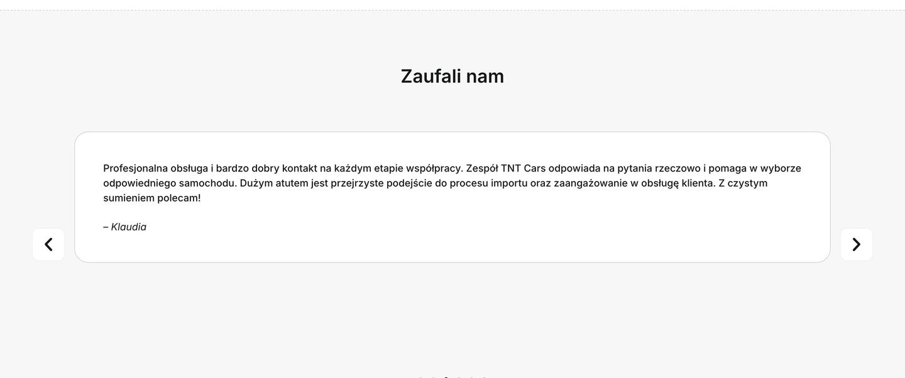
TNT CarsKaruzela „Zaufali nam” ze strzałkami: pełnotekstowa opinia podpisana imieniem („– Klaudia”). Bez gwiazdek i bez wskazanego źródła zewnętrznego — to wzorzec formy opinii, nie weryfikacji.
Auto China (auto-china.com)Pasek „Auto China znane z”: logotypy mediów motoryzacyjnych i dwie plakietki ocen (Google Reviews, Trustpilot) z pięcioma gwiazdkami, bez liczby recenzji.
Dziś
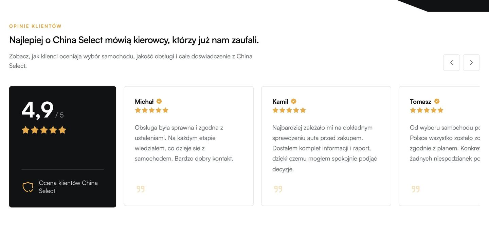
Dziś: opinie klientów — ocena 4,9 i pięć opinii z imionami
Projekt
A/B
Badge Trustpilot w hero — test po zebraniu zewnętrznych opinii
Opinie klientów
Najlepiej o China Select mówią kierowcy, którzy już nam zaufali.
Zobacz, jak klienci oceniają wybór samochodu, jakość obsługi i całe doświadczenie z China Select.
4,9 / 5
★★★★★
1[liczba] opinii
2 Opinie z [Google / Trustpilot] — zobacz wszystkie →
Michał ✓
3[model] · [przebieg od odbioru] · [kiedy odebrał]
★★★★★
Obsługa była sprawna i zgodna z ustaleniami. Na każdym etapie wiedziałem, co dzieje się z samochodem. Bardzo dobry kontakt.
[data · źródło]
Kamil ✓
[model] · [przebieg od odbioru] · [kiedy odebrał]
★★★★★
Najbardziej zależało mi na dokładnym sprawdzeniu auta przed zakupem. Dostałem komplet informacji i raport, dzięki czemu mogłem spokojnie podjąć decyzję.
[data · źródło]
Tomasz ✓
[model] · [przebieg od odbioru] · [kiedy odebrał]
★★★★★
Od wyboru samochodu po odbiór w Polsce wszystko zostało zorganizowane zgodnie z planem. Konkretny kontakt i żadnych niespodzianek po drodze.
= Bez zmianSekcja zostaje 1:1 (nagłówek, karta 4,9, opinie).
✎ ZmianaPrzy ocenie liczba opinii.
✎ ZmianaŹródło opinii z linkiem (Google lub Trustpilot), gdy China Select je wskaże.
✎ ZmianaPod imieniem autora wiersz „model · przebieg od odbioru · kiedy odebrał” — opinia właściciela konkretnego auta, nie sama gwiazdka.
＋ NoweLink „Zobacz wszystkie opinie z nazwą modelu”.
Znaczniki na projekcie
1HP-07.1✎ ZmianaLiczba opinii
2HP-07.2✎ ZmianaŹródło opinii
3HP-07.3✎ ZmianaWiersz „model · przebieg od odbioru · kiedy odebrał” pod imieniem autora
4HP-07.4＋ NoweLink „Zobacz wszystkie opinie z nazwą modelu”
DlaczegoOcena 4,9 bez liczby opinii nic nie mówi; liczba i źródło pokazują kupującemu, ilu ludzi przeszło tę drogę i kto to potwierdza.kliknij, aby rozwinąć
średniaUX
Wzorce
AutoHero — ocena Trustpilot z liczbą recenzji ✓ · TNT Cars — opinia z imieniem i pełną treścią ✓ · Auto China (auto-china.com) — plakietki Google i Trustpilot ✓
Uzasadnienie
Sekcja zostaje 1:1. Przy ocenie dochodzi liczba opinii, a gdy China Select wskaże źródło — logo i link do Google lub Trustpilot. Ocena z liczbą recenzji to standard, który kupujący rozpoznaje.
Podstawa oceny siły
Sekcję opinii mają 3 z 16 przebadanych stron głównych sklepów z Polski i UE; dowód społeczny jest na liście braków (drugi priorytet, pewne). Opinie na stagingu wyglądają na przykładowe.
Element → Akcja → Zdarzenie
Element: Ocena z liczbą opinii i źródłem Akcja: Kupujący sprawdza liczbę opinii i przechodzi do źródła Zdarzenie: kliknięcie źródła opinii
średniaPsychologia sprzedaży
Mechanizm
Dowód społeczny (Social Proof): w niepewności inni kupujący są skrótem do oceny, czy decyzja jest bezpieczna. Liczba opinii przy ocenie mówi, ilu ludzi stoi za średnią — bez niej 4,9 może znaczyć pięć osób. Zewnętrzne źródło przenosi wiarygodność z nas na niezależną platformę.
Źródło i klasa dowodu
Dowód społeczny — klasa dowodu: przypadek (⚠️)
Granica
Działa tylko z prawdziwymi opiniami. Opinie wyglądające na przykładowe przy wysokiej kwocie działają odwrotnie — kupujący czyta je uważnie i wyczuwa szablon.
Obawa kupującego
„Rodzina mówi, że chińczyk się rozsypie i nikt go potem nie kupi” (prawdopodobne ✅; 20 z 692 pytań w polu pytań, zbudowanym z fraz wyszukiwań i dyskusji, nie ankieta) · Rodzina, Łowca okazji z ogłoszeń, Technologiczny
Uzasadnienie
Kupujący sprawdza, czy inni kupili i wyszli z tego cało. Opinie z liczbą i źródłem są też argumentem dla drugiej osoby w rodzinie, która powtarza obawy otoczenia.
Testy A/B — 5 propozycji · 1 z grafiką kliknij, aby rozwinąćTest 1 · A/BOpinie: imię, gwiazdki, tekst, a do tego w osobnej linii „[model auta] · odebrane w [miesiąc rok]”z grafiką
Hipoteza: Jeśli przy każdej opinii dodamy model auta i miesiąc odbioru („[model] · odebrane w [miesiąc]”), to więcej osób kliknie w kontakt, bo kupujący na odległość nie wierzy anonimowym pochwałom i szuka kogoś, kto kupił to samo i tą samą drogą.
Wariant AOpinie: imię, gwiazdki, tekst, data i źródło.
Wariant BOpinie: imię, gwiazdki, tekst, a do tego w osobnej linii „[model auta] · odebrane w [miesiąc rok]”. Reszta bez zmian.
Dlaczego pierwszy: Nie wymaga nowych narzędzi, tylko dopisania danych do opinii, a odpowiada na sceptycyzm, który Baymard opisuje dla niszowych sklepów.
Dowód: Karta czytania China Select: opinie z samym imieniem, bez zdjęć i źródła. Wzorzec rynku: TnT Cars — sześć opinii imiennych, pełnotekstowych. W źródle: Baymard #1709 — na niszowych sklepach kupujący jest sceptyczny wobec opinii.
Metryka główna: Klik w kontakt — zdarzenie „klik w telefon, WhatsApp lub Zamów rozmowę” po przewinięciu sekcji
Pomocnicze:
Przewinięcie przez sekcję opinii
Przejście na kartę auta
Warunek: Min. 150 sesji na wariant; potrzebne prawdziwe opinie z danymi o aucie od kupujących (dziś na stagingu opinie wyglądają na przykładowe).
Zastępczo: przed/po 14 dni + nagrania sesji: 20 sesji z zatrzymaniem na opiniach, policzyć kliknięcia w kontakt po sekcji
Odwracalny
Wariant B — jak wygląda
Opinie klientów
Najlepiej o China Select mówią kierowcy, którzy już nam zaufali.
Zobacz, jak klienci oceniają wybór samochodu, jakość obsługi i całe doświadczenie z China Select.
4,9 / 5
★★★★★
[liczba] opinii
Opinie z [Google / Trustpilot] — zobacz wszystkie →
Michał ✓
[model auta] · odebrane w [miesiąc rok]
★★★★★
Obsługa była sprawna i zgodna z ustaleniami. Na każdym etapie wiedziałem, co dzieje się z samochodem. Bardzo dobry kontakt.
[data · źródło]
Kamil ✓
[model auta] · odebrane w [miesiąc rok]
★★★★★
Najbardziej zależało mi na dokładnym sprawdzeniu auta przed zakupem. Dostałem komplet informacji i raport, dzięki czemu mogłem spokojnie podjąć decyzję.
[data · źródło]
Tomasz ✓
[model auta] · odebrane w [miesiąc rok]
★★★★★
Od wyboru samochodu po odbiór w Polsce wszystko zostało zorganizowane zgodnie z planem. Konkretny kontakt i żadnych niespodzianek po drodze.
[data · źródło]
Test 2 · A/BPod przyciskiem „Pokaż auta” odznaka z oceną i liczbą opinii z Google lub Trustpilot.
Hipoteza: Jeśli w pierwszym ekranie pod przyciskiem dodamy odznakę „4,9 · [liczba] opinii w Google”, to więcej osób przejdzie na listę aut, bo zewnętrzny dowód w pierwszych sekundach odpowiada na pytanie „czy to prawdziwa firma”.
Wariant APierwszy ekran bez odznaki opinii.
Wariant BPod przyciskiem „Pokaż auta” odznaka z oceną i liczbą opinii z Google lub Trustpilot.
Dowód: Wzorzec rynku: AutoHero — odznaka Trustpilot pod CTA w pierwszym ekranie (miejsce 1 z 16 w rankingu hero). W źródle: Baymard #1709.
Metryka główna: Przejście na listę aut — zdarzenie „klik Pokaż auta”
Pomocnicze:
Klik w odznakę
Klik w kontakt
Warunek: Warunek twardy: zebrane prawdziwe opinie w zewnętrznym systemie (min. 5), dziś ich nie ma.
Zastępczo: przed/po 14 dni + nagrania sesji: 20 sesji z kliknięciem w odznakę
Odwracalny
Test 3 · A/BJedna opinia ze zdjęciem kupującego z autem przy odbiorze.
Hipoteza: Jeśli jedna z opinii będzie ze zdjęciem kupującego przy odbiorze auta, to więcej osób kliknie w kontakt, bo zdjęcie dowodzi, że ktoś naprawdę odebrał auto.
Wariant AOpinie tekstowe.
Wariant BJedna opinia ze zdjęciem kupującego z autem przy odbiorze.
Dowód: W źródle: Baymard #756 — opinie tylko tekstowe nie zawierają informacji, które mają kupujący. Baza taktyk: opinie ze zdjęciami kupujących zwiększają zaufanie.
Metryka główna: Klik w kontakt — zdarzenie „klik w telefon, WhatsApp lub Zamów rozmowę”
Pomocnicze:
Przewinięcie przez sekcję opinii
Warunek: Wymaga zgody kupującego na zdjęcie i faktycznego zdjęcia; do czasu zebrania zdjęć test się nie odbywa.
Zastępczo: przed/po 14 dni + nagrania sesji: 20 sesji z przewinięciem przez opinie, policzyć kliknięcia w kontakt po sekcji
Odwracalny
Test 4 · A/BOpinie zaraz po sekcji „Najczęściej wybierane modele”.
Hipoteza: Jeśli sekcję opinii przesuniemy tuż po „Najczęściej wybieranych modelach”, to więcej osób kliknie w kontakt, bo kupujący zobaczył już auta i potrzebuje dowodu, że inni je odebrali.
Wariant AOpinie niżej, po sekcji procesu i bezpieczeństwa.
Wariant BOpinie zaraz po sekcji „Najczęściej wybierane modele”.
Dowód: Logika kupującego (CS). Hipoteza własna, brak wyniku w źródle.
Metryka główna: Klik w kontakt — zdarzenie „klik w telefon, WhatsApp lub Zamów rozmowę”
Pomocnicze:
Przewinięcie do końca strony
Warunek: Min. 300 sesji na wariant; zmiana wyłącznie kolejności.
Zastępczo: przed/po 14 dni + mapa przewijania
Odwracalny
Test 5 · A/BDwie opinie 5★ i jedna 4★ z krótką odpowiedzią China Select.
Hipoteza: Jeśli jedna z trzech opinii będzie czterogwiazdkowa z odpowiedzią China Select, to więcej osób kliknie w kontakt, bo same piątki wyglądają na kupione.
Wariant ATrzy opinie, pięć gwiazdek każda.
Wariant BDwie opinie 5★ i jedna 4★ z krótką odpowiedzią China Select.
Dowód: W źródle: Baymard #743 — zbyt mało opinii budzi wątpliwość co do ich autentyczności. Hipoteza własna.
Metryka główna: Klik w kontakt — zdarzenie „klik w telefon, WhatsApp lub Zamów rozmowę”
Pomocnicze:
Przewinięcie przez sekcję opinii
Warunek: Wymaga prawdziwej opinii czterogwiazdkowej; nie wolno jej wymyślać.
Zastępczo: przed/po 14 dni + nagrania sesji: 20 sesji z zatrzymaniem na opiniach, policzyć kliknięcia w kontakt po sekcji
Odwracalny
Decyzja Wymaga zewnętrznego systemu zbierania opinii. Opinie na stagingu wyglądają na przykładowe — przed live trzeba zebrać prawdziwe.
HP-08
Pasek kontaktu — dodajemy „Zamów rozmowę”
UZUPEŁNIENIE FUNKCJI
Pasek zostaje w obecnym wyglądzie (telefon z godzinami, WhatsApp, e-mail, odpowiedź w 30 minut). Dodajemy przycisk „Zamów rozmowę” — doradca oddzwania w wybranym terminie.
Najlepsze na rynku
AzjaAuto: kalendarz rezerwacji z podanym czasem trwania (30 min), godzinami dostępności i formatem spotkania (Google Meet).
AzjaAuto: obok kalendarza telefon i e-mail jako szybsza ścieżka („Prefer a quick chat?”).
Auto China (auto-china.com): „Book a meeting — Schedule a consultation” z przyciskiem rezerwacji terminu obok zwykłego formularza wiadomości.
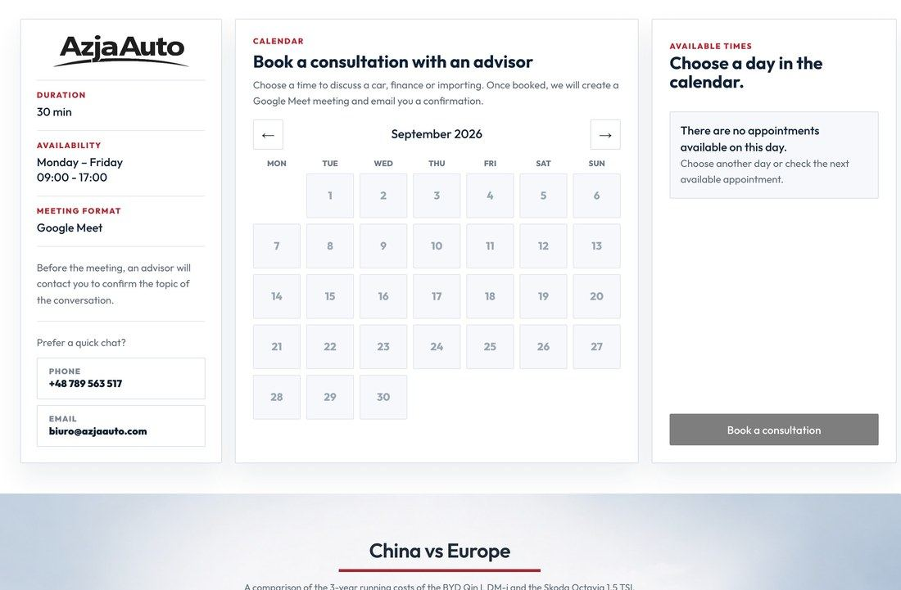
AzjaAutoRezerwacja konsultacji z doradcą na stronie: kalendarz miesięczny, czas 30 min, dostępność pon–pt 9:00–17:00, spotkanie w Google Meet, przycisk „Book a consultation”; obok telefon i e-mail. Na zrzucie wszystkie dni są nieaktywne („There are no appointments available on this day”).
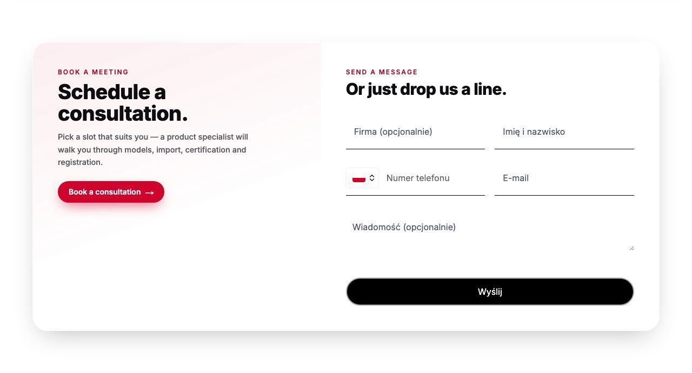
Auto China (auto-china.com)Dwie drogi kontaktu obok siebie: po lewej „Schedule a consultation” (wybór terminu z doradcą, przycisk „Book a consultation →”), po prawej krótki formularz (firma opcjonalnie, imię, telefon, e-mail, wiadomość).
Dziś
Dziś: pasek kontaktu — telefon Pn–Pt 09:00–17:00, WhatsApp, e-mail, „Doradca China Select odpowie w ciągu 30 minut”
Projekt
1Zamów rozmowę
2Zamów rozmowę — zostaw numer
Twój numer telefonu
Zamów rozmowę
Administrator danych: [nazwa firmy] · Informacja o przetwarzaniu danych
Zmiany
= Bez zmianWygląd paska bez zmian.
＋ NoweNowy przycisk „Zamów rozmowę” na pasku kontaktu.
＋ NoweFormularz „Zamów rozmowę”: numer telefonu i przycisk; doradca oddzwania.
＋ NowePod formularzem dwie osobne zgody, jak w elemencie 17 karty auta: kontakt w sprawie rozmowy (także automatyczny) i marketing (opcjonalny).
Znaczniki na projekcie
1HP-08.1＋ NowePrzycisk „Zamów rozmowę” na pasku kontaktu
2HP-08.2＋ NoweFormularz: numer telefonu i przycisk „Zamów rozmowę”
3HP-08.3＋ NoweDwie osobne zgody RODO pod formularzem
DlaczegoKupujący blisko decyzji nie chce dzwonić w ciemno; rozmowa w wybranym terminie i dotrzymana obietnica czasu odpowiedzi dają mu kontrolę.kliknij, aby rozwinąć
słabaUX
Uzasadnienie
Pasek zostaje (telefon z godzinami, WhatsApp, e-mail, odpowiedź w 30 minut). Dochodzi przycisk „Zamów rozmowę”: numer i preferowana pora, doradca oddzwania. Obietnica „30 minut” jest już na stronie i zostaje tylko wtedy, gdy jest dotrzymywana, także poza godzinami pracy; inaczej podajemy realny czas.
Podstawa oceny siły
Obietnica czasu odpowiedzi jest na liście braków (pierwszy priorytet, pewne), ale bez wzorca rynkowego i bez reguły z oceną wady. Najpierw decyzja operacyjna — zmierzyć czas odpowiedzi — potem napis.
Element → Akcja → Zdarzenie
Element: Przycisk „Zamów rozmowę” i obietnica czasu odpowiedzi w pasku kontaktu Akcja: Kupujący zostawia numer i porę — wie, kiedy doradca oddzwoni Zdarzenie: zamówienie rozmowy
mocnaPsychologia sprzedaży
Mechanizm
Lęk przed oczekiwanym złym zdarzeniem (Dread Aversion): niewiedza „kiedy oddzwonią” rodzi napięcie. Sygnał kosztowny (Signaling): konkretną obietnicę czasu odpowiedzi może złożyć tylko firma, która jej dotrzymuje. Niedotrzymana obietnica uruchamia negatywne nastawienie (Negativity Bias): złe doświadczenie po pozytywnej obietnicy waży więcej niż brak obietnicy. Wybór pory rozmowy oddaje kupującemu kontrolę.
Źródło i klasa dowodu
Lęk przed oczekiwanym złym zdarzeniem — klasa dowodu: przypadek (⚠️)
Granica
„30 minut” jest już na stronie. Jeśli nie jest dotrzymywane, zmiana napisu bez zmiany procesu nic nie da albo zaszkodzi — obietnicę trzeba dotrzymać albo zdjąć. Najpierw zmierzyć faktyczny czas odpowiedzi w różnych porach doby. Formularz rozmowy ma blok zgód jak formularze karty auta.
Obawa kupującego
„Mam wpłacić zaliczkę za auto, które stoi w Chinach, a nie mogę go obejrzeć” — poczucie braku kontroli nad procesem (prawdopodobne ✅; 20 z 692 pytań w polu pytań, zbudowanym z fraz wyszukiwań i dyskusji, nie ankieta) · wszystkie grupy; najmocniej Rodzina (oczekuje odpowiedzi) i Przedsiębiorca (nie czeka)
Uzasadnienie
Obietnica czasu wymaga procesu, który ją obsłuży — także wieczorem i w weekend. Jeśli asystent automatyczny odpowiada poza godzinami pracy, „30 minut” może zostać z dopiskiem; jeśli nie — podajemy realny czas („w godzinach 9–17 w 30 minut, poza nimi do [X] godzin”).
Testy A/B — 5 propozycji · 1 z grafiką kliknij, aby rozwinąćTest 1 · A/BOkno „Zamów rozmowę”: wyłącznie telefon; to samo zdanie wyjaśniające pod polem.z grafiką
Hipoteza: Jeśli po kliknięciu „Zamów rozmowę” kupujący zobaczy formularz z jednym polem (telefon) zamiast trzech (imię, telefon, pytanie), to więcej osób wyśle formularz, bo kupujący importu waha się, zanim poda dane komuś, kogo nie zna, a każde dodatkowe pole to kolejny powód do odłożenia kontaktu.
Wariant AOkno „Zamów rozmowę” w układzie przyjętym domyślnie (projekt go nie określa): imię, telefon, krótkie pytanie; pod polami zdanie wyjaśniające, po co telefon.
Wariant BOkno „Zamów rozmowę”: wyłącznie telefon; to samo zdanie wyjaśniające pod polem.
Dlaczego pierwszy: Wysłanie formularza to właśnie ten krok, w którym kupujący z chęcią do rozmowy odpada; zmiana to usunięcie dwóch pól, bez nowych danych.
Dowód: W źródle: Baymard #668 — duża liczba pól widocznych domyślnie zniechęca; #731 — użytkownicy niechętnie podają telefon, jeśli nie wiedzą po co; #558 — dodatkowe pola telefonu zwiększają onieśmielenie formularza. Dotyczy kasy i danych osobowych, tu zastosowanie do formularza kontaktu.
Metryka główna: Wysłanie formularza — zdarzenie „wysłanie formularza Zamów rozmowę”, do ustawienia w analityce; oprócz tego „klik Zamów rozmowę”
Pomocnicze:
Klik „Zamów rozmowę”
Porzucenie okna bez wysłania
Czas od otwarcia do wysłania
Warunek: Min. 100 otwarć okna na wariant; wymaga działającej obsługi oddzwonień w godzinach Pn-Pt 09:00-17:00 (dane z paska) i obietnicy 30 minut, którą doradcy mogą dotrzymać.
Zastępczo: przed/po 14 dni + nagrania sesji: 20 otwarć okna, policzyć porzucenia przy poszczególnych polach
Odwracalny
Wariant B — jak wygląda
Zamów rozmowę
Zamów rozmowę z doradcą
Telefon
+48 000 000 000
Numer służy wyłącznie do rozmowy z doradcą. Oddzwonimy w ciągu [30] minut, Pn-Pt 09:00-17:00.
Oddzwoń do mnie
Test 2 · A/BPrzycisk „Oddzwonimy w ciągu 30 minut”.
Hipoteza: Jeśli przycisk „Zamów rozmowę” zamienimy na „Oddzwonimy w ciągu 30 minut”, to więcej osób go kliknie, bo kupujący obawia się, że po wysłaniu zgłoszenia nikt się nie odezwie, a konkretny czas to obietnica, którą już składa pasek.
Wariant APrzycisk „Zamów rozmowę”.
Wariant BPrzycisk „Oddzwonimy w ciągu 30 minut”.
Dowód: Wzorzec rynku: PrimaAuto — „Odpowiadamy w ciągu godziny” przy dwóch przyciskach kontaktu. Strona China Select: „Doradca odpowie w ciągu 30 minut” już jest w pasku.
Metryka główna: Klik w przycisk — zdarzenie „klik Zamów rozmowę”
Pomocnicze:
Wysłanie formularza
Czas do pierwszego oddzwonienia
Warunek: Min. 200 sesji na wariant; doradcy muszą dotrzymywać 30 minut w godzinach pracy; poza godzinami tekst B jest nieprawdziwy i trzeba go zamienić.
Zastępczo: przed/po 14 dni + pomiar faktycznego czasu oddzwonienia na próbie 20 zgłoszeń
Odwracalny
Test 3 · A/BWybór terminu: kupujący wybiera dzień i godzinę z wolnych okien 30 minut.
Hipoteza: Jeśli zamiast oddzwonienia pokażemy wybór terminu rozmowy (okna 30 minut w godzinach pracy), to więcej osób zamówi rozmowę, bo kupujący, który nie chce, żeby ktoś zadzwonił w złym momencie, woli sam wybrać godzinę.
Wariant AOddzwonienie: kupujący zostawia numer, doradca dzwoni w ciągu 30 minut.
Wariant BWybór terminu: kupujący wybiera dzień i godzinę z wolnych okien 30 minut.
Dowód: Wzorzec rynku: AzjaAuto — miejsce 1 z 13, rezerwacja okna 30 minut Pn-Pt 9-17 przez Google Meet, jedyny sklep z rezerwacją konsultacji bez telefonu.
Warunek: Wymaga kalendarza doradców z faktycznie wolnymi oknami oraz potwierdzonych godzin pracy; bez tego test się nie odbywa.
Zastępczo: przed/po 14 dni + liczba zrealizowanych rozmów w obu okresach
Odwracalny
Test 4 · A/BGłówny przycisk „Napisz na WhatsApp”; „Zamów rozmowę” jako przycisk drugorzędny.
Hipoteza: Jeśli pierwszym i złotym przyciskiem w pasku będzie „Napisz na WhatsApp”, a telefon drugim, to więcej osób skontaktuje się, bo kupujący korzysta z telefonu, a pisemna rozmowa nie wymaga mówienia z obcym.
Wariant AGłówny przycisk „Zamów rozmowę”, obok telefon, WhatsApp i e-mail.
Wariant BGłówny przycisk „Napisz na WhatsApp”; „Zamów rozmowę” jako przycisk drugorzędny.
Dowód: Wzorzec rynku: Guazi — „Chat with an Expert” przez WhatsApp; TnT Cars i AutoChina — WhatsApp na stronie. W źródle: Baymard #3165 — użytkownicy muszą łatwo znaleźć kilka kanałów wsparcia.
Metryka główna: Klik w kontakt — zdarzenie „klik WhatsApp”
Pomocnicze:
Wysłanie formularza
Klik w telefon
Warunek: Min. 200 sesji na wariant; numer WhatsApp musimy być aktywny (dziś na stronie jest numer testowy).
Zastępczo: przed/po 14 dni + liczba nowych rozmów WhatsApp w obu okresach
Odwracalny
Test 5 · A/BPasek ze zdjęciem i imieniem doradcy przy przycisku „Zamów rozmowę”.
Hipoteza: Jeśli w pasku pokażemy zdjęcie i imię doradcy („Rozmowę poprowadzi [imię]”), to więcej osób kliknie w kontakt, bo kupujący drogiego auta z Chin chce wiedzieć, z kim będzie mówić.
Wariant APasek bez zdjęcia i imienia doradcy.
Wariant BPasek ze zdjęciem i imieniem doradcy przy przycisku „Zamów rozmowę”.
Dowód: Wzorzec rynku: MyChinaPal — zespół ze zdjęciami, imionami i rolami. Logika kupującego (CS). Hipoteza własna, brak wyniku w źródle.
Metryka główna: Klik w kontakt — zdarzenie „klik Zamów rozmowę”
Pomocnicze:
Wysłanie formularza
Klik WhatsApp
Warunek: Wymaga zgody osoby na zdjęcie i wskazania doradcy.
Zastępczo: przed/po 14 dni + nagrania sesji: 20 sesji z paskiem w widoku, policzyć kliknięcia w „Zamów rozmowę”
Odwracalny
Decyzja Godziny pracy do uzupełnienia. Booking kalendarza — do testu jako trzeci CTA.
HP-09
Stopka — dane sprzedawcy i linki prawne
ZAMIANA
Stopka to wymóg prawny i filtr odpadania. Kupujący sprawdzający firmę zawsze zagląda do stopki w poszukiwaniu NIP i KRS. Brak to czerwona flaga. Dane stagingowe muszą być zastąpione przed uruchomieniem live.
Najlepsze na rynku
PrimaAuto: w stopce adres, dwa telefony, e-mail i trzy linki prawne (regulaminy, polityka prywatności); bez NIP i KRS.
DriveWave: w stopce strony głównej nazwa spółki, adres, NIP i KRS.
DriveWave (karta czytania PDP): na karcie auta jest tylko nazwa spółki, bez adresu, NIP i KRS.
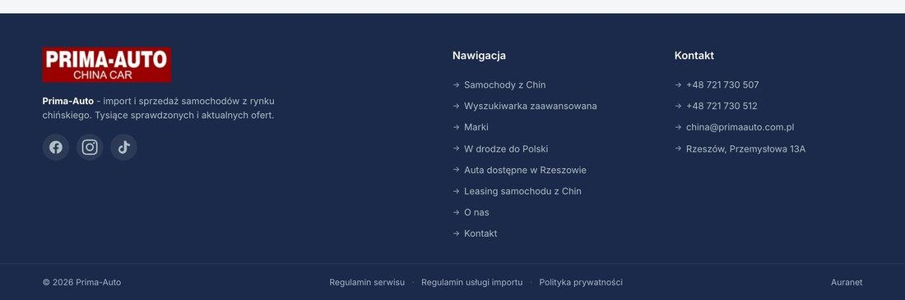
PrimaAutoStopka: logo i opis firmy, ikony Facebook / Instagram / TikTok, kolumna „Kontakt” (dwa telefony, e-mail, adres „Rzeszów, Przemysłowa 13A”), na dole „Regulamin serwisu”, „Regulamin usługi importu”, „Polityka prywatności”. NIP i KRS w stopce nie ma.
✎ ZmianaWiersz prawny ze złotymi polami: [pełna nazwa spółki] · NIP · KRS · [adres siedziby] — do uzupełnienia danymi China Select.
✎ ZmianaLinki do dokumentów prawnych: Regulamin, Polityka prywatności oraz prawo odstąpienia (treść do decyzji prawnej).
Znaczniki na projekcie
1HP-09.1✎ ZmianaWiersz prawny z danymi spółki (nazwa, NIP, KRS, adres) — pola złote, wymagane przed live
2HP-09.2✎ ZmianaLinki do dokumentów prawnych: Regulamin, Polityka prywatności, prawo odstąpienia — wymagane przed live
DlaczegoKupujący sprawdzający firmę zagląda do stopki; NIP, KRS i adres to wymóg prawa i pierwszy dowód, że po drugiej stronie jest spółka.kliknij, aby rozwinąć
mocnaUX
Wzorce
DriveWave — nazwa spółki, adres, NIP i KRS w stopce ✓ · PrimaAuto — kontakt i trzy linki prawne w stopce ✓
Uzasadnienie
W stopce są dziś dane testowe (+48 123 123 123, test@chinatest.pl), bez NIP, KRS i adresu. Pełne dane spółki i linki do polityki prywatności, regulaminu i prawa odstąpienia (14 dni) to wymóg przed uruchomieniem strony, nie opcja.
Podstawa oceny siły
Wymóg prawny (usługi drogą elektroniczną, sprzedaż na odległość); dane prawne w stopce są na liście braków (drugi priorytet, pewne).
Element → Akcja → Zdarzenie
Element: Stopka z pełnymi danymi spółki i linkami prawnymi Akcja: Kupujący sprawdza NIP i KRS przed kontaktem Zdarzenie: wyświetlenie stopki
średniaPsychologia sprzedaży
Mechanizm
Sygnał kosztowny (Signaling): dane rejestrowe da się sprawdzić w rejestrze, więc firma, która je podaje, bierze na siebie odpowiedzialność. Awersja do niejasności (Ambiguity Bias): anonimowy sprzedawca przy kwocie kilkuset tysięcy to niewiadoma, której kupujący nie zaplanuje — wybiera unikanie.
Dane działają tylko kompletne i zgodne z rejestrem. Dane testowe na uruchomionej stronie zerują wiarygodność całej strony.
Obawa kupującego
„Pośrednik bierze marżę — sprawdzam, czy nie sprowadzę taniej sam” — nieufność do pośredników (prawdopodobne ✅; 20 z 692 pytań w polu pytań, zbudowanym z fraz wyszukiwań i dyskusji, nie ankieta) · wszystkie grupy — sprawdzenie firmy przed przelewem dotyczy każdego kupującego
Uzasadnienie
Stopka nie jest elementem sprzedaży, ale filtrem odpadania: kupujący sprawdzający firmę zawsze tam zagląda. Brak NIP i KRS to dla niego czerwona flaga, której nie zrównoważy żaden inny argument na stronie.
Testy A/B — 5 propozycji · 1 z grafiką kliknij, aby rozwinąćTest 1 · A/BTe same dane spółki w tej samej linii, a obok przycisk „Sprawdź nas w rejestrze” z linkiem do publicznego reje…z grafiką
Hipoteza: Jeśli obok danych spółki w stopce dodamy link „Sprawdź nas w rejestrze”, to więcej osób kliknie w kontakt, bo kupujący drogiego auta z Chin sprawdza firmę w stopce i dziś nie ma jak zweryfikować jej jednym kliknięciem.
Wariant ADane spółki (nazwa, NIP, KRS, adres) w jednej szarej linii dolnego paska stopki, bez linku do rejestru.
Wariant BTe same dane spółki w tej samej linii, a obok przycisk „Sprawdź nas w rejestrze” z linkiem do publicznego rejestru. Linki prawne bez zmian.
Dlaczego pierwszy: Dane spółki są obowiązkowe, więc nic nie kosztują dodatkowo, a to, jak są pokazane, decyduje o tym, czy kupujący je znajdzie i sprawdzi.
Dowód: Karta czytania China Select: stopka z numerem testowym, brak NIP, adresu, lat działalności. W źródle: Baymard #1707 — kupujący oceniają wiarygodność firmy już na stronie głównej.
Metryka główna: Klik w kontakt — zdarzenie „klik w telefon, WhatsApp lub Zamów rozmowę” po dotarciu do stopki
Pomocnicze:
Klik „Sprawdź w rejestrze”
Klik w link prawny
Warunek: Min. 300 sesji na wariant; wymaga danych spółki (obowiązkowe przed uruchomieniem strony niezależnie od testu).
Zastępczo: przed/po 14 dni + nagrania sesji: 20 sesji z przewinięciem do stopki
Test 2 · A/BDodatkowa kolumna „Bezpieczny zakup”: Raport Guazi, Jak płacisz, Proces zakupu.
Hipoteza: Jeśli w stopce dodamy kolumnę „Bezpieczny zakup” z trzema linkami (raport Guazi, jak płacisz, proces zakupu), to więcej osób poprosi o raport lub kliknie w kontakt, bo kupujący, który dotarł do stopki, nadal ma obawy i szuka odpowiedzi.
Wariant AStopka z kolumnami nawigacji, bez kolumny o bezpieczeństwie.
Wariant BDodatkowa kolumna „Bezpieczny zakup”: Raport Guazi, Jak płacisz, Proces zakupu.
Dowód: Logika kupującego (CS). Wzorzec rynku: AutoHero — sekcje „Jak to działa” i „Standardy jakości” jako przyciski.
Metryka główna: Prośba o raport Guazi — zdarzenie „klik Raport Guazi w stopce”
Pomocnicze:
Klik w kontakt
Przejście na listę aut
Warunek: Min. 300 sesji na wariant; wymaga stron docelowych dla linków.
Zastępczo: przed/po 14 dni + nagrania sesji: 20 sesji dochodzących do stopki, policzyć kliknięcia w „Raport Guazi”
Odwracalny
Test 3 · A/BTa sama kolumna z dodanym przyciskiem WhatsApp.
Hipoteza: Jeśli w kolumnie „Kontakt” stopki dodamy przycisk WhatsApp, to więcej osób skontaktuje się, bo kupujący, który przewinął całą stronę, nie wraca do paska kontaktu, a w stopce ma dziś tylko numer i e-mail.
Wariant AKolumna „Kontakt”: numer telefonu i e-mail.
Wariant BTa sama kolumna z dodanym przyciskiem WhatsApp.
Dowód: W źródle: Baymard #3165 — użytkownicy muszą łatwo znaleźć kanały wsparcia.
Metryka główna: Klik w kontakt — zdarzenie „klik WhatsApp w stopce”
Pomocnicze:
Klik w telefon
Warunek: Min. 300 sesji na wariant; numer WhatsApp aktywny.
Zastępczo: przed/po 14 dni + nagrania sesji: 20 sesji dochodzących do stopki, policzyć kliknięcia w WhatsApp
Odwracalny
Test 4 · A/BStopka z logo i podpisem „Oficjalny partner Guazi”.
Hipoteza: Jeśli w stopce dodamy „Oficjalny partner Guazi” z logo, to więcej osób poprosi o raport, bo kupujący sprawdzający firmę w stopce znajdzie wiarygodnego partnera.
Wariant AStopka bez wzmianki o Guazi.
Wariant BStopka z logo i podpisem „Oficjalny partner Guazi”.
Dowód: Logika kupującego (CS). Hipoteza własna, brak wyniku w źródle.
Metryka główna: Prośba o raport Guazi — zdarzenie „klik Zamów przykładowy raport” po dotarciu do stopki
Pomocnicze:
Klik w kontakt
Warunek: Wymaga zgody China Select i Guazi na użycie logo oraz potwierdzenia, że China Select jest oficjalnym partnerem.
Zastępczo: przed/po 14 dni + nagrania sesji: 20 sesji dochodzących do stopki, policzyć kliknięcia w „Zamów przykładowy raport”
Odwracalny
Test 5 · A/BOsobny wiersz „Prawo odstąpienia” z jednym zdaniem objaśnienia.
Hipoteza: Jeśli „Prawo odstąpienia od umowy (14 dni)” pokażemy jako osobny widoczny wiersz z jednym zdaniem, zamiast linku w szeregu, to więcej osób kliknie w kontakt, bo kupujący obawia się, czy może się wycofać.
Wariant ALink „Prawo odstąpienia od umowy (14 dni)” w szeregu linków prawnych.
Wariant BOsobny wiersz „Prawo odstąpienia” z jednym zdaniem objaśnienia.
Dowód: W źródle: Baymard #803 i #3411 — użytkownicy rezygnują, gdy nie znajdą polityki zwrotów (dotyczy sklepów z towarem zwrotnym).
Metryka główna: Klik w kontakt — zdarzenie „klik w telefon, WhatsApp lub Zamów rozmowę” po dotarciu do stopki
Pomocnicze:
Klik w link prawny
Warunek: Treść zdania musi sprawdzić prawnik; wymóg prawny dotyczy samego linku, nie jego eksponowania.
Zastępczo: przed/po 14 dni + nagrania sesji: 20 sesji dochodzących do stopki, policzyć kliknięcia w kontakt i w „Prawo odstąpienia”
Odwracalny
Decyzja Pełne dane spółki do uzupełnienia. Priorytet: przed uruchomieniem live.
Porównanie — dziś vs. projekt
Wszystkie elementy razem
Dziś
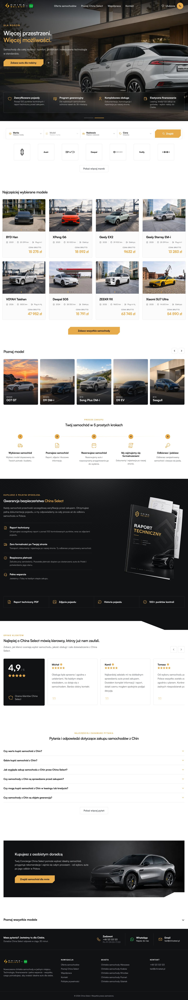
Projekt
123
4▶ Tło: wideo w pętli (auto z oferty) · na telefonie wersja pionowa
Import aut z Chin · ceny do odbioru w Polsce
Auta z Chin z ceną do odbioru, raportem i gwarancją
Transport, cło, homologacja i rejestracja po naszej stronie. Każdy egzemplarz sprawdzony w Chinach, zanim zapłacisz resztę.
Zweryfikowane pojazdyPonad 100 punktów kontrolnych i raport techniczny przed zakupem.
Program gwarancyjnyDla wybranych samochodów ochrona nawet do [36] miesięcy.
Kompleksowa obsługaDokumentacja, homologacja i rejestracja po naszej stronie.
Elastyczne finansowanieLeasing, kredyt lub zakup za gotówkę - wybór należy do Ciebie.
1W liczbach
[100+ / 200+]punktów kontroli w raporcie Guazi (do potwierdzenia z Guazi)
[liczba]aut w ofercie dziś
[X] tyg.od rezerwacji do odbioru
[liczba]aut sprowadzonych do Polski
1 Nasz partner
China Select by Guazi — auta z jednej z największych platform aut używanych w Chinach
Wybieramy auta z oferty Guazi i sprowadzamy je do Polski. [Każde] przechodzi wcześniej inspekcję Guazi — wiesz, w jakim jest stanie, zanim zapłacisz resztę.
Guazipartner China Select
11 latna rynku aut używanych w Chinach
3 000 000sprzedanych aut
10 000+pracowników
SoftBank · Sequoia · Tencentwśród inwestorów
2 Żelazna weryfikacja: raport Guazi przy każdym aucie
Ocena stanu, [100+ / 200+] punktów kontroli (do potwierdzenia z Guazi), zdjęcia. Streszczenie widzisz przy aucie, pełny raport wysyłamy na e-mail lub WhatsApp.
✓ Bez wypadku✓ Bez zalania✓ Bez pożaru
3 Zamów przykładowy raport
Dane o Guazi: guazi.com (stan na 10.2026). Liczba punktów kontroli — do potwierdzenia z Guazi.
1Przy każdej marce liczba aut w ofercie (z feedu)
[liczba] aut
[liczba] aut
[liczba] aut
[liczba] aut
[liczba] aut
[liczba] aut
[liczba] aut
Pokaż więcej marek
Najczęściej wybierane modele
1Nowy kafel: raport Guazi, cena do odbioru, rata, termin odbioru, bateria i zasięg dla elektryków
2WszystkieNa stanieW drodze(opcjonalnie)
Raport Guazi · ocena [X]
BYD Han
[wersja · nadwozie]
202320 299 kmHybryda plug-in[X] kWh · zasięg [X] km WLTP
Cena do odbioru w Polsce
117 900 zł
leasing od [X] zł / mies.
z cłem, akcyzą, VAT, transportem, homologacją i rejestracją
📄 Zamów raport
Odbiór za [X] tyg.Ochrona do [36] mies.
Raport Guazi · ocena [X]
XPeng G6
580 Long Range · SUV elektryczny, 5 miejsc
202330 000 kmElektryczny[X] kWh · zasięg [X] km WLTP
Cena do odbioru w Polsce
149 900 zł
leasing od [X] zł / mies.
z cłem, akcyzą, VAT, transportem, homologacją i rejestracją
📄 Zamów raport
Odbiór za [X] tyg.Ochrona do [36] mies.
Raport Guazi · ocena [X]
Geely EX2
[wersja · nadwozie]
202529 900 kmElektryczny[X] kWh · zasięg [X] km WLTP
Cena do odbioru w Polsce
73 900 zł
leasing od [X] zł / mies.
z cłem, akcyzą, VAT, transportem, homologacją i rejestracją
📄 Zamów raport
Odbiór za [X] tyg.Ochrona do [36] mies.
Raport Guazi · ocena [X]
Geely Starray EM-i
[wersja · nadwozie]
202525 299 kmHybryda plug-in[X] kWh · zasięg [X] km WLTP
Cena do odbioru w Polsce
101 900 zł
leasing od [X] zł / mies.
z cłem, akcyzą, VAT, transportem, homologacją i rejestracją
📄 Zamów raport
Odbiór za [X] tyg.Ochrona do [36] mies.
Raport Guazi · ocena [X]
VOYAH Taishan
[wersja · nadwozie]
20265 500 kmHybryda plug-in[X] kWh · zasięg [X] km WLTP
Cena do odbioru w Polsce
368 900 zł
leasing od [X] zł / mies.
z cłem, akcyzą, VAT, transportem, homologacją i rejestracją
📄 Zamów raport
Odbiór za [X] tyg.Ochrona do [36] mies.
Raport Guazi · ocena [X]
Deepal S05
[wersja · nadwozie]
202428 300 kmElektryczny[X] kWh · zasięg [X] km WLTP
Cena do odbioru w Polsce
121 900 zł
leasing od [X] zł / mies.
z cłem, akcyzą, VAT, transportem, homologacją i rejestracją
📄 Zamów raport
Odbiór za [X] tyg.Ochrona do [36] mies.
Raport Guazi · ocena [X]
ZEEKR 9X
[wersja · nadwozie]
20259 600 kmHybryda plug-in[X] kWh · zasięg [X] km WLTP
Cena do odbioru w Polsce
490 900 zł
leasing od [X] zł / mies.
z cłem, akcyzą, VAT, transportem, homologacją i rejestracją
📄 Zamów raport
Odbiór za [X] tyg.Ochrona do [36] mies.
Raport Guazi · ocena [X]
Xiaomi SU7 Ultra
[wersja · nadwozie]
202514 600 kmElektryczny[X] kWh · zasięg [X] km WLTP
Cena do odbioru w Polsce
419 900 zł
leasing od [X] zł / mies.
z cłem, akcyzą, VAT, transportem, homologacją i rejestracją
📄 Zamów raport
Odbiór za [X] tyg.Ochrona do [36] mies.
Zobacz wszystkie samochody
Ceny i parametry przykładowe — dane z feedu po podpięciu.
bez zmian
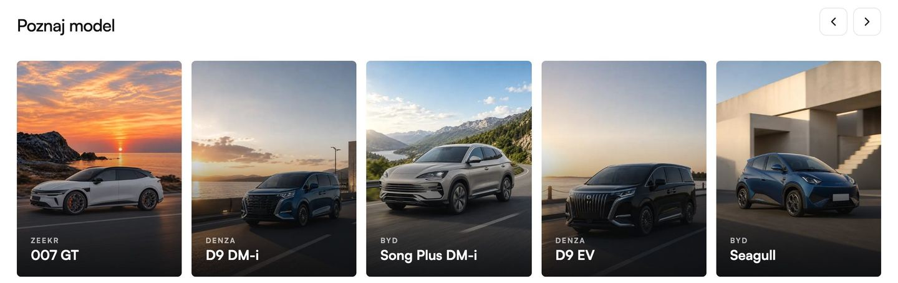
2[X] dni
[X] dni
[X] dni
[X] dni
[X] dni
1Raport Guazi · „Zamów przykładowy raport”
Wygląd bez zmian — uzupełniamy funkcje
1Krok „Poznajesz samochód”: raport z nazwą Guazi i link „Zamów przykładowy raport” (pełny raport po kontakcie).
2Przy każdym kroku orientacyjny czas, gdy będą dane (dziś: [X] dni).
1Zamów przykładowy raport → e-mail / WhatsApp
Wygląd bez zmian — uzupełniamy funkcje
1„Raport techniczny PDF” w dolnym pasku działa: „Zamów przykładowy raport” → e-mail / WhatsApp (zapytanie trafia do doradcy).
Opinie klientów
Najlepiej o China Select mówią kierowcy, którzy już nam zaufali.
Zobacz, jak klienci oceniają wybór samochodu, jakość obsługi i całe doświadczenie z China Select.
4,9 / 5
★★★★★
1[liczba] opinii
2 Opinie z [Google / Trustpilot] — zobacz wszystkie →
Michał ✓
3[model] · [przebieg od odbioru] · [kiedy odebrał]
★★★★★
Obsługa była sprawna i zgodna z ustaleniami. Na każdym etapie wiedziałem, co dzieje się z samochodem. Bardzo dobry kontakt.
[data · źródło]
Kamil ✓
[model] · [przebieg od odbioru] · [kiedy odebrał]
★★★★★
Najbardziej zależało mi na dokładnym sprawdzeniu auta przed zakupem. Dostałem komplet informacji i raport, dzięki czemu mogłem spokojnie podjąć decyzję.
[data · źródło]
Tomasz ✓
[model] · [przebieg od odbioru] · [kiedy odebrał]
★★★★★
Od wyboru samochodu po odbiór w Polsce wszystko zostało zorganizowane zgodnie z planem. Konkretny kontakt i żadnych niespodzianek po drodze.